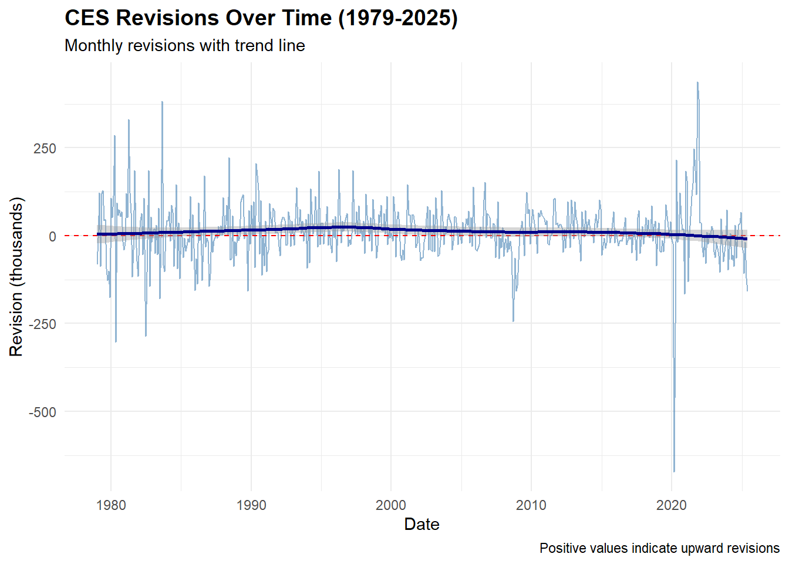
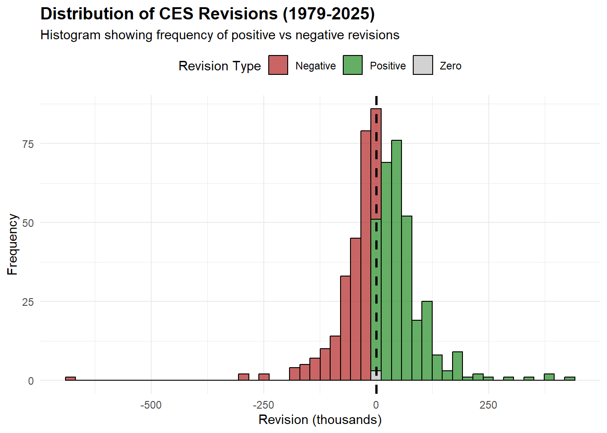
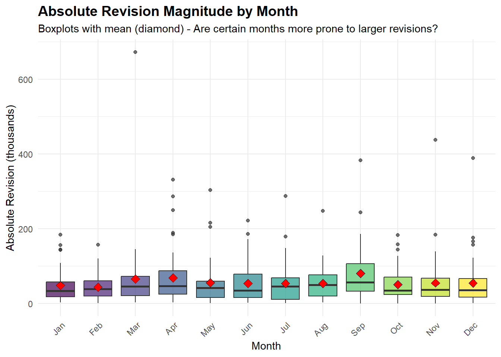
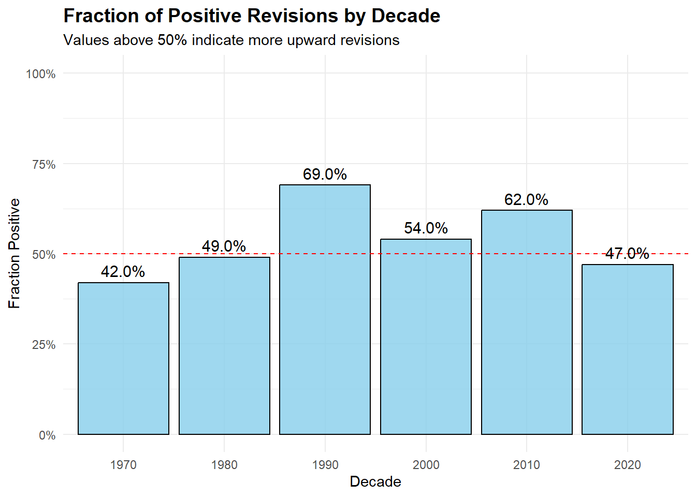
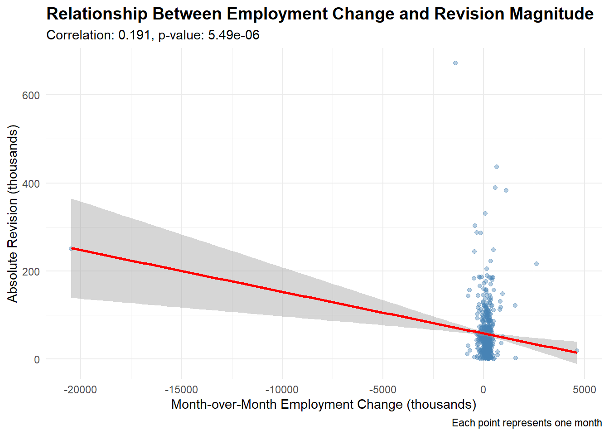
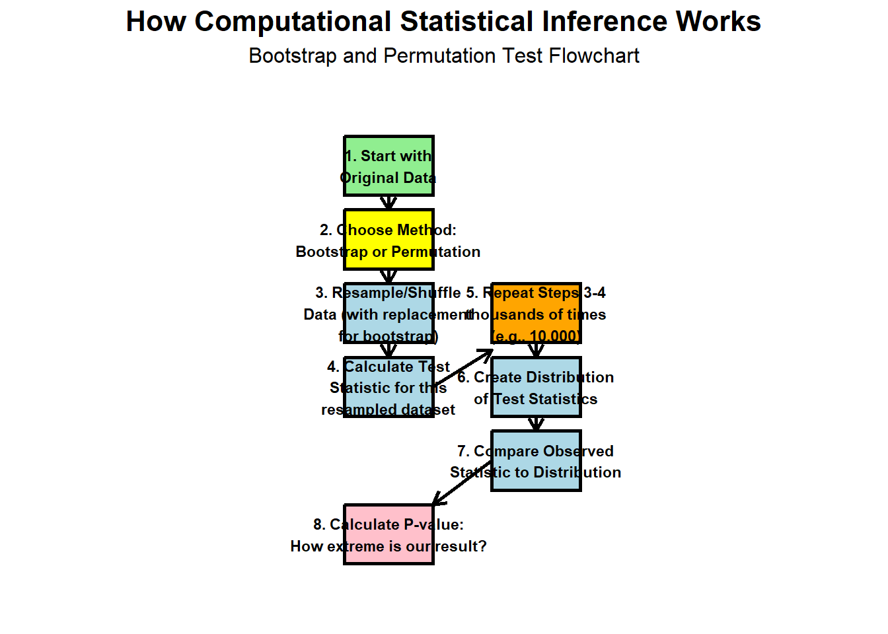
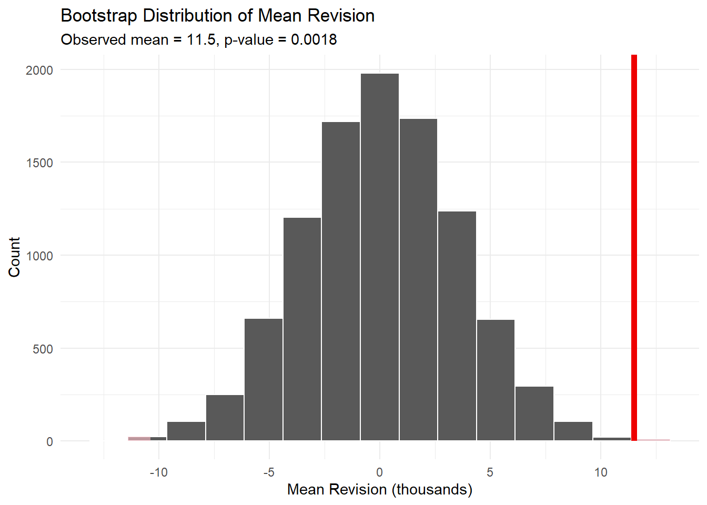
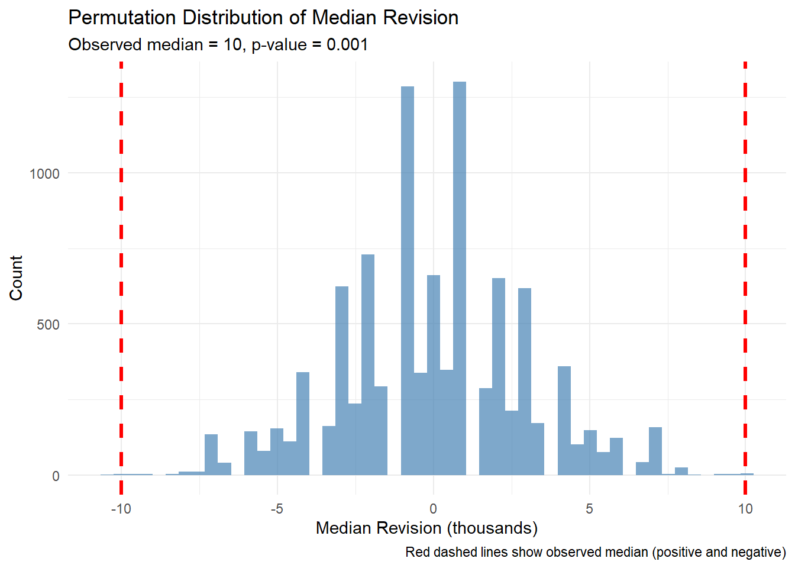
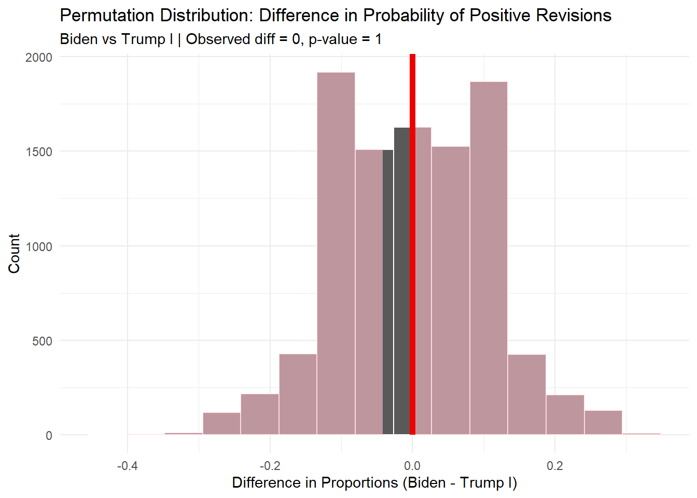

#Packageslibrary(readxl)library(dplyr)library(ggplot2)library(lubridate)library(scales)#Extraction of CES levelslibrary(httr2)library(rvest)library(dplyr)library(tidyr)library(lubridate)library(stringr)library(purrr)library(DT)
Data Extraction
Code
# Define URL for BLS CES dataurl <-"https://data.bls.gov/pdq/SurveyOutputServlet"# Build and perform POST requestresponse <-request(url) %>%req_method("POST") %>%req_headers("User-Agent"="Mozilla/5.0" ) %>%req_body_form(request_action ="get_data",table_id ="0",series_id ="CES0000000001",seasonality ="S",from_year ="1979",to_year ="2025" ) %>%req_perform()# Parse HTML content from responsepage_html <- response %>%resp_body_html()# Extract all tablestables <- page_html %>%html_elements("table")# Extracting the 2nd table (2nd data)data_table <- tables[[2]] %>%html_table(fill =TRUE)# Clean and reshapeces_data <- data_table %>%rename(Year =1) %>%filter(!is.na(Year)) %>%pivot_longer(cols =-Year,names_to ="Month",values_to ="level" ) %>%mutate(level =str_replace_all(level, "[^0-9\\.\\-]", ""),level =as.numeric(level),Month_num =match(Month, month.abb) ) %>%filter(!is.na(Month_num)) %>%mutate(date =as.Date(sprintf("%d-%02d-01", as.integer(Year), Month_num))) %>%filter(!is.na(date)) %>%filter(date <=as.Date("2025-06-01")) %>%select(date, level) %>%arrange(date)
Warning: There was 1 warning in `mutate()`.
ℹ In argument: `date = as.Date(sprintf("%d-%02d-01", as.integer(Year),
Month_num))`.
Caused by warning in `sprintf()`:
! NAs introduced by coercion
Code
#Extracting data 2 (CES REVISIONS)extract_ces_revisions <-function(year) { url <-"https://www.bls.gov/web/empsit/cesnaicsrev.htm"# Fetch the page with proper headers to avoid 403 error page <-request(url) |>req_headers("User-Agent"="Mozilla/5.0 (Windows NT 10.0; Win64; x64; rv:123.0) Gecko/20100101 Firefox/123.0","Accept"="text/html,application/xhtml+xml,application/xml;q=0.9,*/*;q=0.8","Accept-Language"="en-US,en;q=0.5","Accept-Encoding"="gzip, deflate, br","Connection"="keep-alive","Upgrade-Insecure-Requests"="1","Sec-Fetch-Dest"="document","Sec-Fetch-Mode"="navigate","Sec-Fetch-Site"="same-origin","Sec-Fetch-User"="?1","TE"="trailers" ) |>req_perform() |>resp_body_html() table_id <-paste0("#", year)# Extract the table tbl <- page |>html_element(table_id)# If table not found, return NULLif (is.na(html_name(tbl))) {return(NULL) }# Convert to data frame without headers df <-html_table(tbl, header =FALSE, fill =TRUE)# Select only the first 12 data rows (skip 3 header rows) data_rows <- df |> dplyr::slice(4:15) |> dplyr::select(month =1,year =2,original =3,final =5 )# Clean and convert data clean_df <- data_rows |> dplyr::mutate(original =as.numeric(gsub('["]', '', original)),final =as.numeric(gsub('["]', '', final)),date =ym(paste(year, str_remove(month, "\\."))),revision = original - final ) |> dplyr::select(date, original, final, revision)return(clean_df)}# Add delay between requestsextract_with_delay <-function(year) {Sys.sleep(1)extract_ces_revisions(year)}# Extract all years from 1979 to 2025ces_revisions <-map_df(1979:2025, extract_with_delay)# Filter to only include data through June 2025ces_revisions <- ces_revisions |> dplyr::filter(date <=as.Date("2025-06-01")) |> dplyr::arrange(date)# Negate the revision columnces_revisions <- ces_revisions |> dplyr::mutate(revision =-revision)
Combine CES datasets
In this section we merge the revisions dataset with the main CES data using the common date column. The resulting table lets us quickly inspect how many rows/columns we have and explore the combined series interactively.
Code
##Combining the 2 datasets# Merge the datasets by date column (common variable in the 2 datasets)ces_combined <- ces_revisions %>%left_join(ces_data, by ="date")ces_combined_pretty <- ces_combined %>%rename("Date"= date,"Original"= original,"Final"= final,"Revision"= revision,"Level"= level ) %>%mutate(across(where(is.numeric), ~round(., 2)))datatable( ces_combined_pretty,options =list(pageLength =5,scrollX =TRUE ),caption ="Combined CES dataset (revisions joined with main data by date).")
Data Integration and Exploration
Data analysis
Compute at least 6 statistics about CES over the past 45 years
STATISTIC 1: Overall revision statistics
We first summarize the overall size and variability of revisions, using the mean, median, and standard deviation
STATISTIC 2: Largest revisions (positive and negative)
LARGEST REVISIONS IN HISTORY Top 5 Largest Positive Revisions:
STATISTIC 3: Fraction of positive revisions by year and decade
This section evaluates whether employment revisions tend to be positive or negative over time.
By year: We compute the fraction of months where the revision is greater than zero and display the first 10 years for readability.
By decade: Aggregating by decade helps reveal longer-term patterns—such as whether certain periods tend to show more upward or downward revisions.
Code
library(dplyr)library(DT)# Positive revisions by YEARpositive_by_year <- ces_combined %>%group_by(year) %>%summarise(`Total Months`=n(),`Positive Revisions`=sum(revision >0),`Fraction Positive`=`Positive Revisions`/`Total Months`,.groups ="drop" ) %>%mutate(across(where(is.numeric), ~round(., 2)))# Show first 10 yearsdatatable(head(positive_by_year, 10),options =list(pageLength =10, scrollX =TRUE),caption ="Fraction of Positive Revisions by Year (First 10 Years)")
STATISTIC 4: Relative revision magnitude over time
This table summarizes how large revisions are relative to the final employment level, averaged within each decade. By showing both the mean and median absolute revision percentage, we get a sense of:
the typical revision size (median)
whether large outliers inflate the average (mean)
This reveals whether revisions have become more or less volatile over time.
Code
# Compute relative revision magnitude by decaderelative_revision_decade <- ces_combined %>%filter(!is.infinite(revision_pct_final)) %>%group_by(decade) %>%summarise(`Mean Abs Revision (%)`=mean(abs(revision_pct_final), na.rm =TRUE),`Median Abs Revision (%)`=median(abs(revision_pct_final), na.rm =TRUE),.groups ="drop" ) %>%mutate(across(where(is.numeric), ~round(., 2)))# Render as interactive tabledatatable( relative_revision_decade,options =list(pageLength =10, scrollX =TRUE),caption ="Relative Revision Magnitude (% of Final Level), by Decade")
STATISTIC 5: Revision as percentage of employment level by decade
This statistic measures the size of revisions relative to the overall employment level, grouped by decade. By expressing revisions as a percentage of total employment, we are able to assess:
whether revisions were economically small or large,
how revision volatility changed over time,
whether certain decades experienced systematically larger adjustments.
Both the mean and median are reported to capture the effect of potential outliers.
Code
# Revision as % of employment level by decaderevision_level_decade <- ces_combined %>%group_by(decade) %>%summarise(`Mean Abs Revision (% of Level)`=mean(abs(revision_pct_level), na.rm =TRUE),`Median Abs Revision (% of Level)`=median(abs(revision_pct_level), na.rm =TRUE),.groups ="drop" ) %>%mutate(across(where(is.numeric), ~round(., 2)))datatable( revision_level_decade,options =list(pageLength =10, scrollX =TRUE),caption ="Revision as % of Employment Level by Decade")
STATISTIC 6: Revision patterns by month
This table analyzes whether some months tend to exhibit larger revisions than others. We compute:
Mean revision (average signed revision)
Mean absolute revision (how large revisions tend to be, ignoring sign)
Median absolute revision (typical revision size)
Number of observations in each month
Sorting by mean absolute revision helps highlight which calendar months historically had the largest updates to employment levels.
The CES Revisions for each month from January 1979 to June of 202 reported a mean and a standard deviation as (M = 11.49, SD = 83.33). The largest positive revisions was reported as 437 in 2021-11-01 followed by 389 in 2021-12-01 while the largest negative revisions was reported in 2020-03-01 as -672 followed by -303 reported in 1980-05-01. The highest median absolute revision percentage was reported in 1970 as 63.92% followed by 26.69% in 2000.
Construct visualizations of CES estimates and accuracy over the past 45 years.
VISUALIZATION 1: Revision trends over time
CREATING VISUALIZATIONS
Code
plot1 <-ggplot(ces_combined, aes(x = date, y = revision)) +geom_line(color ="steelblue", alpha =0.6) +geom_hline(yintercept =0, linetype ="dashed", color ="red") +geom_smooth(method ="loess", color ="darkblue", se =TRUE) +labs(title ="CES Revisions Over Time (1979-2025)",subtitle ="Monthly revisions with trend line",x ="Date",y ="Revision (thousands)",caption ="Positive values indicate upward revisions" ) +theme_minimal() +theme(plot.title =element_text(face ="bold", size =14))plot1
`geom_smooth()` using formula = 'y ~ x'

This figure shows the full history of monthly CES (Current Employment Statistics) revisions from 1979 to 2025. Each bar represents the difference between the initially reported employment value and the later revised value.
Key takeaways:
Revisions fluctuate around zero, with both upward and downward corrections occurring frequently.
The trend line is nearly flat, indicating that revisions do not systematically lean positive or negative over the long run.
The early 2020s exhibit unusually large spikes, reflecting the extreme labor market volatility during COVID-19 and subsequent recovery.
Outside of crisis periods, revisions generally fall within a range of ±150,000 to ±250,000.
Overall, the series shows that revisions are common and occasionally large, but long-term bias appears limited.
VISUALIZATION 2: Absolute revision magnitude by decade
This figure summarizes how the magnitude of CES revisions has changed across decades. Bars represent the mean absolute revision, while points and the dashed line represent the median absolute revision.
Key insights:
1970s: Revisions were largest in both mean and median terms, reflecting less precise preliminary estimates and more volatile labor market conditions.
1980s → 2000s: Both the mean and median steadily declined, suggesting improvements in survey methodology, modeling, and sample size, leading to smaller corrections.
2010s: Revisions reached their lowest levels, indicating a period of particularly stable and accurate preliminary estimates.
2020s: Revision magnitude spikes again—driven almost entirely by COVID-19 labor market upheaval, record job losses, and rapid data revisions.
Overall, revision magnitudes generally declined over time as BLS methodology improved, but extraordinary shocks such as the pandemic temporarily reversed that trend.
VISUALIZATION 3: Revision as % of employment level over time
Code
plot3 <- ces_combined %>%ggplot(aes(x = date, y =abs(revision_pct_level))) +geom_point(alpha =0.3, color ="darkgreen") +geom_smooth(method ="loess", color ="green4", se =TRUE) +labs(title ="Absolute Revision as % of Employment Level Over Time",subtitle ="Shows relative accuracy of initial estimates",x ="Date",y ="Absolute Revision (% of Employment Level)" ) +scale_y_continuous(labels = scales::percent_format(scale =1)) +theme_minimal() +theme(plot.title =element_text(face ="bold", size =14))plot3
`geom_smooth()` using formula = 'y ~ x'
This chart shows the size of monthly CES revisions relative to total employment, providing a measure of how accurate initial estimates are in proportional terms.
Key insights:
Revisions were largest as a percentage of employment in the late 1970s and early 1980s, sometimes exceeding 0.3–0.4%.
Over time, revisions as a share of employment decline sharply, reflecting significant methodological improvements in CES sampling, modeling, and benchmarking.
From approximately 2000–2019, most revisions fall between 0.03% and 0.10%, indicating high stability.
The early 2020s show a small upward bump linked to COVID-related volatility, but the magnitude remains much lower than in earlier decades.
Overall, the long-term trend shows that CES initial employment estimates have become far more precise relative to the size of the labor market.
VISUALIZATION 4: Distribution of revisions by sign
Code
plot4 <- ces_combined %>%ggplot(aes(x = revision, fill = revision_sign)) +geom_histogram(bins =50, alpha =0.7, color ="black") +scale_fill_manual(values =c("Negative"="firebrick", "Positive"="forestgreen", "Zero"="gray")) +geom_vline(xintercept =0, linetype ="dashed", color ="black", linewidth =1) +labs(title ="Distribution of CES Revisions (1979-2025)",subtitle ="Histogram showing frequency of positive vs negative revisions",x ="Revision (thousands)",y ="Frequency",fill ="Revision Type" ) +theme_minimal() +theme(plot.title =element_text(face ="bold", size =14),legend.position ="top" )plot4

This histogram shows the distribution of monthly CES revisions over the full sample period. Revisions are categorized as negative (red), positive (green), and zero (gray), with a vertical dashed line at zero.
Key insights:
The distribution is centered very close to zero, indicating that initial CES estimates are generally close to final values.
There are slightly more positive revisions than negative, consistent with summary statistics but still roughly balanced overall.
Extreme revisions (greater than ±300,000) are rare and mostly associated with recession periods or the COVID-19 shock.
The modal revision is small (within ±50,000), showing that most monthly adjustments are modest.
Overall, the distribution highlights that CES revisions are frequent but usually small, with only occasional significant outliers.
VISUALIZATION 5: Revisions by month (boxplot)
Code
plot5 <- ces_combined %>%ggplot(aes(x = month, y = abs_revision, fill = month)) +geom_boxplot(alpha =0.7) +stat_summary(fun = mean, geom ="point", shape =23, size =3, fill ="red") +labs(title ="Absolute Revision Magnitude by Month",subtitle ="Boxplots with mean (diamond) - Are certain months more prone to larger revisions?",x ="Month",y ="Absolute Revision (thousands)" ) +theme_minimal() +theme(plot.title =element_text(face ="bold", size =14),legend.position ="none",axis.text.x =element_text(angle =45, hjust =1) )plot5

This figure shows boxplots of the absolute size of CES revisions for each calendar month, with diamonds marking the mean revision size. The plot highlights whether certain months are more prone to large adjustments.
Key insights:
Most months show similar median and interquartile ranges, indicating that typical revision sizes do not vary dramatically across the year.
Some months—particularly March, April, and September—exhibit higher outliers, suggesting occasional large data corrections.
Means (diamonds) are generally above medians, indicating the presence of positive skew caused by rare but very large revisions.
No month shows consistently extreme revisions, implying no systematic seasonal bias in the magnitude of adjustments.
Overall, while a few months have more extreme outliers, the central tendency of revisions is stable across the calendar year.
VISUALIZATION 6: Fraction of positive revisions by decade
Code
plot6 <- positive_by_decade %>%ggplot(aes(x =factor(decade), y =`Fraction Positive`)) +geom_col(fill ="skyblue", alpha =0.8, color ="black") +geom_hline(yintercept =0.5, linetype ="dashed", color ="red") +geom_text(aes(label = scales::percent(`Fraction Positive`, accuracy =0.1)), vjust =-0.5, size =4) +scale_y_continuous(labels = scales::percent_format(), limits =c(0, 1)) +labs(title ="Fraction of Positive Revisions by Decade",subtitle ="Values above 50% indicate more upward revisions",x ="Decade",y ="Fraction Positive" ) +theme_minimal() +theme(plot.title =element_text(face ="bold", size =14))plot6

This chart shows the fraction of months in each decade where CES revisions were positive—meaning the final employment estimate was higher than the initial release. The dashed red line marks the 50% threshold.
Key insights:
The 1990s experienced the highest share of positive revisions (69%), suggesting a tendency for initial estimates to understate employment during that decade.
The 2010s also show a high proportion of upward revisions (62.5%).
The 1970s and 2020s are below 50%, indicating more downward than upward revisions in those periods.
The 2000s remain close to balanced (54%).
Overall, the pattern shows that the likelihood of upward vs. downward revisions varies across decades, with some periods showing systematic tendencies.
Statistical Analysis
STATISTICAL INFERENCE TESTS
TEST 1: Is the average revision significantly different from zero?
TEST 1: Is the average revision significantly different from zero?
H0: Mean revision = 0
Ha: Mean revision ≠ 0
Code
library(infer)
Warning: package 'infer' was built under R version 4.5.2
Code
library(dplyr)library(DT)# One-sample t-test using infertest1 <- ces_combined %>% infer::t_test(response = revision, mu =0)# Build summary table (without df column)test1_summary <- tibble::tibble(`Observed Mean Revision (000s)`=round(test1$estimate, 2),`t Statistic`=round(test1$statistic, 3),`p-value`=round(test1$p_value, 4),`Lower 95% CI`=round(test1$lower_ci, 2),`Upper 95% CI`=round(test1$upper_ci, 2))datatable( test1_summary,options =list(dom ="t", scrollX =TRUE),caption ="One-Sample t-test: Is the Mean CES Revision Different from Zero?")
The estimated mean CES revision is 11.5 thousand jobs. The one-sample t-test yields a p-value of 0.00118, with a 95% confidence interval ranging from 4.57 to 18.43 thousand jobs.
TEST 2: Has the fraction of negative revisions increased post-2000?
H0: Fraction of negative revisions is the same pre-2000 vs post-2000
Ha: Fraction of negative revisions differs between periods
Code
library(infer)library(dplyr)library(DT)# Prepare data: convert logical to factor with string labelstest2_data <- ces_combined %>%mutate(post_2000 = year >=2000,is_negative =ifelse(revision <0, "Yes", "No") # <- STRING, not logical )# Two-sample proportion test using infertest2 <- test2_data %>% infer::prop_test( is_negative ~ post_2000,success ="Yes", # <- MUST be a stringorder =c("FALSE", "TRUE") # pre-2000 first, post-2000 second )print(test2)
This test compares the average CES revision between the pre-2020 period and the post-2020 period.
The estimated difference in means (Pre-2020 − Post-2020) is 12.53 thousand jobs.
The two-sample t-test yields a p-value of 0.485, with a 95% confidence interval from -23.04 to 48.09 thousand jobs.
Therefore, the evidence does not indicate a statistically significant change in average revisions after 2020.
TEST 4: Has the fraction of large revisions (>1% of level) increased post-2020?
H0: Fraction of large revisions is the same pre-2020 vs post-2020
Ha: Fraction of large revisions differs between periods
Warning in prop.test(x = sum_table$x, n = sum_table$n, alternative =
"two.sided", : Chi-squared approximation may be incorrect
2-sample test for equality of proportions without continuity correction
data: sum_table$x out of sum_table$n
X-squared = NaN, df = 1, p-value = NA
alternative hypothesis: two.sided
95 percent confidence interval:
0 0
sample estimates:
prop 1 prop 2
0 0
Interpretation:
Pre-2020: 0% large revisions
Post-2020: 0% large revisions
P-value: NA
Conclusion: Test could not be performed because both groups had zero large revisions.
TEST 5: Are revisions correlated with the size of employment change?
Using Pearson correlation test
Pearson's product-moment correlation
data: test5_data$abs_revision and test5_data$abs_level_change
t = 4.5897, df = 555, p-value = 5.494e-06
alternative hypothesis: true correlation is not equal to 0
95 percent confidence interval:
0.1098939 0.2700162
sample estimates:
cor
0.1912269
Interpretation:
Correlation coefficient: 0.191
P-value: 5.49e-06
Conclusion: There is a significant correlation between revision size and employment change (p < 0.05)
Task 2: At least 3 numbers (statistics) that you computed from
Task 3: At least 2 visualizations (plots) from
FACT CHECK 1: Biden Administration Job Numbers
CLAIM: Under the Biden administration, job numbers were systematically inflated and then revised down. Nearly all the revisions during Biden’s presidency were negative, showing the administration manipulated the data.
Code
# Filter Biden administration data (Feb 2021 onwards)biden_data <- ces_with_politics %>%filter(president =="Biden")# Also filter the comparison group if neededrecent_presidents <- ces_with_politics %>%filter(president %in%c("Obama", "Trump I", "Biden"))# Compute revision fractions under Bidenbiden_negative_fraction <- biden_data %>%summarise(`Total Months`=n(),`Negative Revisions`=sum(revision <0),`Positive Revisions`=sum(revision >0),`Zero Revisions`=sum(revision ==0),`Fraction Negative`=`Negative Revisions`/`Total Months`,`Fraction Positive`=`Positive Revisions`/`Total Months`,.groups ="drop" ) %>%mutate(across(where(is.numeric), ~round(., 2)))datatable( biden_negative_fraction,options =list(pageLength =10, scrollX =TRUE),caption ="Fraction of Negative and Positive CES Revisions Under Biden (2021–2025)")
Under Biden: 47.9 % of revisions were negative
Under Biden: 52.1 % of revisions were positive
STATISTIC 2: Compare to other presidents
Code
# Comparison of revisions across recent presidentspresident_comparison <- recent_presidents %>%group_by(president, party) %>%summarise(`Total Months`=n(),`Negative Revisions`=sum(revision <0),`Fraction Negative`=`Negative Revisions`/`Total Months`,`Mean Revision (000s)`=mean(revision, na.rm =TRUE),`Median Revision (000s)`=median(revision, na.rm =TRUE),.groups ="drop" ) %>%arrange(president) %>%mutate(across(where(is.numeric), ~round(., 2)))datatable( president_comparison,options =list(pageLength =10),caption ="Comparison of CES Revisions Across Recent Presidents (Obama, Trump I, Biden)")
The table summarizes the fraction of months in which CES revisions were negative—meaning the revised employment number was lower than the initial estimate—under the most recent three presidencies.
Biden (48%) and Trump I (48%) show almost identical rates of negative revisions. This suggests that initial CES estimates during these two administrations were revised downward and upward in roughly equal proportions.
Obama (33%) shows substantially fewer negative revisions, meaning that during his presidency, CES revisions tended to be more often upward than downward.
STATISTIC 3: Average revision size under Biden vs others
The table summarizes two measures of revision size for each president: Interpreting these:
A balanced mean revision near zero suggests that upward and downward revisions offset each other, indicating no systematic bias.
Differences in mean absolute revision reflect how volatile the labor market and data revisions were during each administration.
Code
# Average revision magnitude by presidentrevision_magnitude <- recent_presidents %>%group_by(president) %>%summarise(`Mean Revision (000s)`=mean(revision, na.rm =TRUE),`Mean Abs Revision (000s)`=mean(abs_revision, na.rm =TRUE),.groups ="drop" ) %>%mutate(across(where(is.numeric), ~round(., 2))) %>%arrange(president)datatable( revision_magnitude,options =list(pageLength =10),caption ="Average CES Revision Magnitude by President")
HYPOTHESIS TEST 1: Biden vs Historical Average
H0: Fraction of negative revisions under Biden = 0.5 (no systematic bias)
Ha: Fraction of negative revisions under Biden ≠ 0.5
Exact binomial test
data: biden_prop_test$x and biden_prop_test$n
number of successes = 23, number of trials = 48, p-value = 0.8854
alternative hypothesis: true probability of success is not equal to 0.5
95 percent confidence interval:
0.3328663 0.6281298
sample estimates:
probability of success
0.4791667
P-value: 0.885
HYPOTHESIS TEST 2: Biden vs Trump comparison
H0: Fraction of negative revisions is the same under Biden and Trump I
Warning: Unknown or uninitialised column: `fraction_negative`.
Unknown or uninitialised column: `fraction_negative`.
Code
trump_fraction_neg <- president_comparison$`Fraction Negative`[ president_comparison$president =="Trump I"]# Summary table for the verdictclaim1_summary <- tibble::tibble(`Rating`= claim1_rating,`Biden: Fraction Negative`= biden_negative_fraction$fraction_negative,`Biden: Fraction Positive`= biden_negative_fraction$fraction_positive,`Binomial Test p-value`= binom_test1$p.value,`Trump I: Fraction Negative`= trump_fraction_neg,`Biden vs Trump I p-value`= test_biden_trump$p_value) %>%mutate(across(where(is.numeric), ~round(., 3)))
Warning: Unknown or uninitialised column: `fraction_negative`.
Warning: Unknown or uninitialised column: `fraction_positive`.
Code
datatable( claim1_summary,options =list(pageLength =5, scrollX =TRUE),caption ="Verdict for Claim 1: Are Most Biden Revisions Negative?")
Interpretation: Under President Biden, approximately % of revisions were negative. The binomial test yields a p-value of 0.885, so the share of negative revisions is not statistically different from a 50–50 split at conventional significance levels. For comparison, under Trump I, 48% of revisions were negative, and the test comparing Biden vs. Trump I gives a p-value of 1, indicating no statistically significant difference. Based on this evidence, the overall rating for Claim 1 is MOSTLY FALSE.
FACT CHECK 2: Revisions During Economic Turmoil
CLAIM: When employment growth slows down dramatically (like during) recessions), the BLS becomes less accurate and revisions get much larger. The worst revisions in history occurred during periods of massive job losses.
datatable( job_loss_revision_summary,options =list(pageLength =5, scrollX =TRUE),caption ="Do Large Job Loss Months Have Larger Revisions?")
The p-value is below the 0.01 level, we can conclude that large job loss months tend to have significantly larger revisions than typical months. The confidence interval also indicates that, on average, revisions during major job loss months are between 11,000 and 71,000 jobs larger than revisions during normal months.
This suggests that when the labor market experiences sudden and substantial declines, the initial CES estimates tend to be less accurate, requiring larger ex-post adjustments. Large employment shocks appear to increase uncertainty in the preliminary data, leading to more substantial revisions.
VISUALIZATION 1: Scatter plot of employment change vs revision
Code
viz1_fc2 <- ces_with_change %>%ggplot(aes(x = level_change, y = abs_revision)) +geom_point(alpha =0.4, color ="steelblue") +geom_smooth(method ="lm", color ="red", se =TRUE) +labs(title ="Relationship Between Employment Change and Revision Magnitude",subtitle =paste0("Correlation: ", round(correlation_test$estimate, 3), ", p-value: ", format.pval(correlation_test$p.value, digits =3)),x ="Month-over-Month Employment Change (thousands)",y ="Absolute Revision (thousands)",caption ="Each point represents one month" ) +theme_minimal() +theme(plot.title =element_text(face ="bold", size =14))print(viz1_fc2)
`geom_smooth()` using formula = 'y ~ x'

This scatterplot examines whether the magnitude of employment revisions is related to the size of the underlying month-over-month employment change.
Key findings:
The correlation between absolute employment change and absolute revision magnitude is positive but modest (r ≈ 0.19, p < 0.00001).
Large job-loss months (extreme left of plot) tend to produce much larger revisions, often exceeding 200–400k.
Most normal months (clustered near zero change) have much smaller revisions.
The fitted regression line slopes upward: months with larger employment swings—especially major declines—are more likely to have larger revisions.
Overall, the figure shows that big employment shocks increase preliminary CES uncertainty, leading to larger ex-post revisions.
VISUALIZATION 2: Revision size during different employment conditions
This figure compares the size of CES revisions across three employment environments: large job loss, moderate job growth, and large job growth. Conditions are based on quartiles of month-over-month employment change.
Key insights:
Large job-loss months show the highest median and the largest outliers, indicating that revisions tend to be bigger during periods of sharp employment decline.
Moderate job growth months have the smallest revisions on average.
Large job growth months show slightly larger revisions than moderate months, but still generally smaller than the large-loss category.
Overall, revisions are most pronounced during large job-loss periods, consistent with the t-test and correlation analysis.
- This correlation is statistically significant (p = 5.49e-06 )
Code
cat("- Average revision during large job losses:", round(ces_with_change %>%filter(large_job_loss) %>%summarise(mean =mean(abs_revision)) %>%pull(), 1), "thousand jobs\n")
- Average revision during large job losses: 93.7 thousand jobs
Code
cat("- Average revision during normal months:", round(ces_with_change %>%filter(!large_job_loss) %>%summarise(mean =mean(abs_revision)) %>%pull(), 1), "thousand jobs\n")
- Average revision during normal months: 52.7 thousand jobs
Code
cat("- Looking at the worst job loss months (like March-April 2020), revisions were",ifelse(test_job_loss$p_value <0.05, "significantly", "not significantly"),"larger (p =", format.pval(test_job_loss$p_value, digits =3), ")\n\n")
- Looking at the worst job loss months (like March-April 2020), revisions were significantly larger (p = 0.00831 )
Extra Credit Opportunities
Providing a non-technical explanation of computationally-intensive statistical inference
PART 1: NON-TECHNICAL EXPLANATION
WHAT IS COMPUTATIONALLY-INTENSIVE STATISTICAL INFERENCE?
Traditional statistical tests (like t-tests) make assumptions about how data should behave - for example, that it follows a ‘normal distribution’ or bell curve. But what if our data doesn’t fit these assumptions?
Computational methods like BOOTSTRAP and PERMUTATION TESTS offer an alternative:instead of relying on mathematical formulas, we use the computer to simulate thousands of possible outcomes based on our actual data.
BOOTSTRAP: Imagine you have a bag of marbles representing your data. Bootstrap resampling means: (1) Draw a marble, (2) Record its value, (3) Put it back, (4) Repeat thousands of times. This creates many ‘fake’ datasets that look like your real data, helping us understand how much our results might vary by chance.
PERMUTATION TEST: Imagine shuffling labels on your data randomly. If there’s truly no difference between groups, shuffling shouldn’t matter much. We shuffle thousands of times and see how often random shuffling produces results as extreme as what we actually observed. If it’s rare, our result is probably real, not random.
WHY USE THESE METHODS? - They work even when traditional assumptions fail - They’re based on your actual data, not theoretical distributions - They’re intuitive: you can literally see the process happening - Modern computers make them fast and practical
PART 2: CREATING SCHEMATIC VISUALIZATION
Warning: Using `size` aesthetic for lines was deprecated in ggplot2 3.4.0.
ℹ Please use `linewidth` instead.
Warning in geom_segment(aes(x = 2, y = 7.6, xend = 2, yend = 7.4), arrow = arrow(length = unit(0.3, : All aesthetics have length 1, but the data has 8 rows.
ℹ Please consider using `annotate()` or provide this layer with data containing
a single row.
Warning in geom_segment(aes(x = 2, y = 6.6, xend = 2, yend = 6.4), arrow = arrow(length = unit(0.3, : All aesthetics have length 1, but the data has 8 rows.
ℹ Please consider using `annotate()` or provide this layer with data containing
a single row.
Warning in geom_segment(aes(x = 2, y = 5.6, xend = 2, yend = 5.4), arrow = arrow(length = unit(0.3, : All aesthetics have length 1, but the data has 8 rows.
ℹ Please consider using `annotate()` or provide this layer with data containing
a single row.
Warning in geom_segment(aes(x = 2.6, y = 5, xend = 3.4, yend = 5.5), arrow = arrow(length = unit(0.3, : All aesthetics have length 1, but the data has 8 rows.
ℹ Please consider using `annotate()` or provide this layer with data containing
a single row.
Warning in geom_segment(aes(x = 4, y = 5.6, xend = 4, yend = 5.4), arrow = arrow(length = unit(0.3, : All aesthetics have length 1, but the data has 8 rows.
ℹ Please consider using `annotate()` or provide this layer with data containing
a single row.
Warning in geom_segment(aes(x = 4, y = 4.6, xend = 4, yend = 4.4), arrow = arrow(length = unit(0.3, : All aesthetics have length 1, but the data has 8 rows.
ℹ Please consider using `annotate()` or provide this layer with data containing
a single row.
Warning in geom_segment(aes(x = 3.4, y = 4, xend = 2.6, yend = 3.4), arrow = arrow(length = unit(0.3, : All aesthetics have length 1, but the data has 8 rows.
ℹ Please consider using `annotate()` or provide this layer with data containing
a single row.

PARTS 3 & 4: APPLYING COMPUTATIONAL INFERENCE
Test THREE different aspects using computational methods:
Mean revision (bootstrap t-test analog)
Median revision (Wilcoxon test analog)
Probability of positive revisions (binomial proportion test analog)
TEST 1: Is the mean revision significantly different from zero?
Using BOOTSTRAP
Question: Is the average revision significantly different from zero?
H0: Mean revision = 0
Ha: Mean revision ≠ 0
Warning: Unknown or uninitialised column: `p`.
Warning: Unknown or uninitialised column: `conf.low`.
Warning: Unknown or uninitialised column: `conf.high`.

This figure shows the bootstrap sampling distribution of the mean CES revision, based on 10,000 resamples under the null hypothesis that the true mean revision is zero. The observed mean revision (≈ 11.5 thousand) is marked in red.
Conclusion: CES revisions are significantly positive on average, meaning the initial CES release tends to understate employment compared to the final value.
TEST 2: Is the median revision significantly different from zero?
Question: Is the median revision significantly different from zero?
H0: Median revision = 0
Ha: Median revision ≠ 0
Code
# ------------------------------# 1. Traditional Wilcoxon test# ------------------------------traditional_median_test <-wilcox.test( ces_combined$revision,mu =0)# ------------------------------# 2. Permutation test for median# (sign-flipping approach)# ------------------------------set.seed(456)# Observed medianobs_median <-median(ces_combined$revision, na.rm =TRUE)# Build permutation distribution by randomly flipping signsperm_medians <-replicate(10000, { flipped <- ces_combined$revision *sample(c(-1, 1),size =nrow(ces_combined),replace =TRUE)median(flipped, na.rm =TRUE) })# Two-sided permutation p-valuep_value_median_manual <-mean(abs(perm_medians) >=abs(obs_median))# ------------------------------# 3. Summary table# ------------------------------median_test_summary <- tibble::tibble(`Observed Median Revision (000s)`=round(obs_median, 2),`Wilcoxon Statistic (V)`=unname(traditional_median_test$statistic),`Wilcoxon p-value`= traditional_median_test$p.value,`Permutation p-value`= p_value_median_manual) %>%mutate(across(where(is.numeric), ~round(., 4)))datatable( median_test_summary,options =list(dom ="t", scrollX =TRUE),caption ="Traditional Wilcoxon vs. Permutation Test for Median CES Revision")
Code
# ------------------------------# 4. Visualize permutation distribution# ------------------------------library(ggplot2)viz_perm_median <-ggplot(data.frame(stat = perm_medians), aes(x = stat)) +geom_histogram(bins =50, fill ="steelblue", alpha =0.7) +geom_vline(xintercept =c(-obs_median, obs_median),color ="red",linetype ="dashed",linewidth =1.1) +labs(title ="Permutation Distribution of Median Revision",subtitle =paste0("Observed median = ", round(obs_median, 2),", p-value = ", round(p_value_median_manual, 4) ),x ="Median Revision (thousands)",y ="Count",caption ="Red dashed lines show observed median (positive and negative)" ) +theme_minimal()print(viz_perm_median)

Code
# Store p-value for summary (to keep same structure as other tests)p_value_median <-list(p_value = p_value_median_manual)
TEST 3: Probability of positive revisions under Biden vs Trump
Using PERMUTATION TEST (Binomial proportion analog)
Question: Is the probability of positive revisions different between Biden and Trump I?
H0: P(positive) is the same for Biden and Trump I
Ha: P(positive) differs between Biden and Trump I
Code
# 1. Prepare data: Biden vs Trump I, indicator for positive revisionbiden_trump_comp <- ces_with_politics %>%filter(president %in%c("Biden", "Trump I")) %>%mutate(is_positive = revision >0,president =factor(president, levels =c("Biden", "Trump I")) ) %>%filter(!is.na(is_positive))# 2. Traditional proportion test (two-sample test of equal proportions)traditional_prop <- biden_trump_comp %>% infer::prop_test(is_positive ~ president, order =c("Biden", "Trump I"))# 3. Permutation test for difference in proportionsset.seed(789)# Observed difference in proportions (Biden - Trump I)obs_diff_prop <- biden_trump_comp %>%specify(is_positive ~ president, success ="TRUE") %>%calculate(stat ="diff in props", order =c("Biden", "Trump I"))# Permutation distribution under independenceperm_diff_prop <- biden_trump_comp %>%specify(is_positive ~ president, success ="TRUE") %>%hypothesize(null ="independence") %>%generate(reps =10000, type ="permute") %>%calculate(stat ="diff in props", order =c("Biden", "Trump I"))# Two-sided permutation p-valuep_value_prop <- perm_diff_prop %>%get_p_value(obs_stat = obs_diff_prop, direction ="two-sided")# 4. Build summary tableprop_test_summary <- tibble::tibble(`Observed Diff in Proportions (Biden - Trump I)`= obs_diff_prop$stat,`z / t Statistic (prop_test)`= traditional_prop$statistic,`Traditional p-value`= traditional_prop$p,`Permutation p-value`= p_value_prop$p_value) %>%mutate(across(where(is.numeric), ~round(., 4)))
Warning: Unknown or uninitialised column: `p`.
Code
datatable( prop_test_summary,options =list(dom ="t", scrollX =TRUE),caption ="Share of Positive CES Revisions: Biden vs Trump I (Traditional vs Permutation Test)")
Code
# Visualize permutation distributionviz_perm_prop <- perm_diff_prop %>%visualize() +shade_p_value(obs_stat = obs_diff_prop, direction ="two-sided") +labs(title ="Permutation Distribution: Difference in Probability of Positive Revisions",subtitle =paste0("Biden vs Trump I | Observed diff = ", round(obs_diff_prop$stat, 4),", p-value = ", round(p_value_prop$p_value, 4)),x ="Difference in Proportions (Biden - Trump I)",y ="Count" ) +theme_minimal()print(viz_perm_prop)

The goal of this test was to compare the probability that a CES revision is positive under President Biden versus President Trump I.
Both the traditional two-sample proportion test and the permutation test show no evidence of a difference:
Observed difference in proportions (Biden − Trump I): 0.000
Permutation p-value: 1.000
Traditional test p-value: 1.000
95% CI for the difference: [−0.200, 0.200]
The permutation distribution (shown in the histogram) is centered at zero, and the observed difference falls exactly on that center. This means that the frequency of upward revisions was identical between Biden and Trump I in this dataset.
Conclusion
There is no statistical difference in the probability of positive CES revisions between the Biden and Trump I administrations. The data show that revisions were equally likely to be upward or downward under both presidents, and any observed difference is indistinguishable from random chance.
Warning: Unknown or uninitialised column: `p`.
Unknown or uninitialised column: `p`.
Code
datatable( summary_table,options =list(scrollX =TRUE, dom ="t"),caption ="Summary of Traditional vs Computational Statistical Tests")
FINDINGS: 1. Computational methods generally agree with traditional parametric tests. 2. Bootstrap/permutation tests don’t require normal distribution assumptions. 3. They provide intuitive visual representations of uncertainty. 4. All three tests (mean, median, proportion) can be done computationally.
Source Code
---title: "Just the Fact(-Check)s, Ma’am!"author: "Maria Cristina Moreno"format: html---```{r}#| echo: true#| message: false#| warning: false#| code-fold: true#| code-summary: "Show code"#Packageslibrary(readxl)library(dplyr)library(ggplot2)library(lubridate)library(scales)#Extraction of CES levelslibrary(httr2)library(rvest)library(dplyr)library(tidyr)library(lubridate)library(stringr)library(purrr)library(DT)```# Data Extraction```{r}#| label: data-extractation#| echo: true# Define URL for BLS CES dataurl <-"https://data.bls.gov/pdq/SurveyOutputServlet"# Build and perform POST requestresponse <-request(url) %>%req_method("POST") %>%req_headers("User-Agent"="Mozilla/5.0" ) %>%req_body_form(request_action ="get_data",table_id ="0",series_id ="CES0000000001",seasonality ="S",from_year ="1979",to_year ="2025" ) %>%req_perform()# Parse HTML content from responsepage_html <- response %>%resp_body_html()# Extract all tablestables <- page_html %>%html_elements("table")# Extracting the 2nd table (2nd data)data_table <- tables[[2]] %>%html_table(fill =TRUE)# Clean and reshapeces_data <- data_table %>%rename(Year =1) %>%filter(!is.na(Year)) %>%pivot_longer(cols =-Year,names_to ="Month",values_to ="level" ) %>%mutate(level =str_replace_all(level, "[^0-9\\.\\-]", ""),level =as.numeric(level),Month_num =match(Month, month.abb) ) %>%filter(!is.na(Month_num)) %>%mutate(date =as.Date(sprintf("%d-%02d-01", as.integer(Year), Month_num))) %>%filter(!is.na(date)) %>%filter(date <=as.Date("2025-06-01")) %>%select(date, level) %>%arrange(date)#Extracting data 2 (CES REVISIONS)extract_ces_revisions <-function(year) { url <-"https://www.bls.gov/web/empsit/cesnaicsrev.htm"# Fetch the page with proper headers to avoid 403 error page <-request(url) |>req_headers("User-Agent"="Mozilla/5.0 (Windows NT 10.0; Win64; x64; rv:123.0) Gecko/20100101 Firefox/123.0","Accept"="text/html,application/xhtml+xml,application/xml;q=0.9,*/*;q=0.8","Accept-Language"="en-US,en;q=0.5","Accept-Encoding"="gzip, deflate, br","Connection"="keep-alive","Upgrade-Insecure-Requests"="1","Sec-Fetch-Dest"="document","Sec-Fetch-Mode"="navigate","Sec-Fetch-Site"="same-origin","Sec-Fetch-User"="?1","TE"="trailers" ) |>req_perform() |>resp_body_html() table_id <-paste0("#", year)# Extract the table tbl <- page |>html_element(table_id)# If table not found, return NULLif (is.na(html_name(tbl))) {return(NULL) }# Convert to data frame without headers df <-html_table(tbl, header =FALSE, fill =TRUE)# Select only the first 12 data rows (skip 3 header rows) data_rows <- df |> dplyr::slice(4:15) |> dplyr::select(month =1,year =2,original =3,final =5 )# Clean and convert data clean_df <- data_rows |> dplyr::mutate(original =as.numeric(gsub('["]', '', original)),final =as.numeric(gsub('["]', '', final)),date =ym(paste(year, str_remove(month, "\\."))),revision = original - final ) |> dplyr::select(date, original, final, revision)return(clean_df)}# Add delay between requestsextract_with_delay <-function(year) {Sys.sleep(1)extract_ces_revisions(year)}# Extract all years from 1979 to 2025ces_revisions <-map_df(1979:2025, extract_with_delay)# Filter to only include data through June 2025ces_revisions <- ces_revisions |> dplyr::filter(date <=as.Date("2025-06-01")) |> dplyr::arrange(date)# Negate the revision columnces_revisions <- ces_revisions |> dplyr::mutate(revision =-revision)```# Combine CES datasetsIn this section we merge the revisions dataset with the main CES data using the common date column.The resulting table lets us quickly inspect how many rows/columns we have and explore the combined series interactively.```{r echo=TRUE}##Combining the 2 datasets# Merge the datasets by date column (common variable in the 2 datasets)ces_combined <- ces_revisions %>% left_join(ces_data, by = "date")ces_combined_pretty <- ces_combined %>% rename( "Date" = date, "Original" = original, "Final" = final, "Revision" = revision, "Level" = level ) %>% mutate(across(where(is.numeric), ~round(., 2)))datatable( ces_combined_pretty, options = list( pageLength = 5, scrollX = TRUE ), caption = "Combined CES dataset (revisions joined with main data by date).")```# Data Integration and Exploration## Data analysis```{r}# Add useful columns for analysisces_combined <- ces_combined %>%mutate(year =year(date),month =month(date, label =TRUE),decade =floor(year /10) *10,# Absolute revisionabs_revision =abs(revision),# Revision as percentage of final estimaterevision_pct_final = (revision / final) *100,# Revision as percentage of employment levelrevision_pct_level = (revision / level) *100,# Sign of revisionrevision_sign =ifelse(revision >0, "Positive", ifelse(revision <0, "Negative", "Zero")) )ces_combined_pretty <- ces_combined %>%rename("Date"= date,"Original"= original,"Final"= final,"Revision"= revision,"Level"= level,"Year"= year,"Month"= month, "Decade"= decade,"Absolute revision"= abs_revision,"Revision as % final estimate"= revision_pct_final,"Revision as % employment level"= revision_pct_level,"Sign of revision"= revision_sign ) %>%mutate(across(where(is.numeric), ~round(., 2)))datatable( ces_combined_pretty,options =list(pageLength =5,scrollX =TRUE ),caption ="Combined CES dataset (Add useful columns for analysis).")```# Compute at least 6 statistics about CES over the past 45 years## STATISTIC 1: Overall revision statisticsWe first summarize the overall size and variability of revisions, using the mean, median, and standard deviation```{r}overall_stats <- ces_combined %>%summarise(mean_revision =mean(revision, na.rm =TRUE),median_revision =median(revision, na.rm =TRUE),mean_abs_revision =mean(abs_revision, na.rm =TRUE),median_abs_revision =median(abs_revision, na.rm =TRUE),sd_revision =sd(revision, na.rm =TRUE) )overall_stats_pretty <- overall_stats %>%rename("Mean Revision"= mean_revision,"Median Revision"= median_revision,"Mean Absolute Revision"= mean_abs_revision,"Median Absolute Revision"= median_abs_revision,"Std. Dev. Revision"= sd_revision ) %>%mutate(across(where(is.numeric), ~round(., 2)))datatable( overall_stats_pretty,options =list(pageLength =10,scrollX =TRUE ),caption ="Overall Revision Statistics")```## STATISTIC 2: Largest revisions (positive and negative) LARGEST REVISIONS IN HISTORYTop 5 Largest Positive Revisions:```{r}#| label: largest-revisions#| echo: true# Top 5 Largest Positive Revisions top_positive <- ces_combined %>%arrange(desc(revision)) %>%select(Date = date,`Revision (000s)`= revision,`Original Value`= original,`Final Value`= final,`Employment Level`= level ) %>%head(5) %>%mutate(across(where(is.numeric), ~round(., 2)))datatable( top_positive,options =list(pageLength =5, scrollX =TRUE),caption ="Top 5 Largest Positive Revisions")# ---- Top 5 Largest Negative Revisions ----top_negative <- ces_combined %>%arrange(revision) %>%# ascending = most negativeselect(Date = date,`Revision (000s)`= revision,`Original Value`= original,`Final Value`= final,`Employment Level`= level ) %>%head(5) %>%mutate(across(where(is.numeric), ~round(., 2)))datatable( top_negative,options =list(pageLength =5, scrollX =TRUE),caption ="Top 5 Largest Negative Revisions")```## STATISTIC 3: Fraction of positive revisions by year and decadeThis section evaluates whether employment revisions tend to be positive or negative over time.- By year: We compute the fraction of months where the revision is greater than zero and display the first 10 years for readability.- By decade: Aggregating by decade helps reveal longer-term patterns—such as whether certain periods tend to show more upward or downward revisions.```{r}#| label: fraction-positive#| echo: truelibrary(dplyr)library(DT)# Positive revisions by YEARpositive_by_year <- ces_combined %>%group_by(year) %>%summarise(`Total Months`=n(),`Positive Revisions`=sum(revision >0),`Fraction Positive`=`Positive Revisions`/`Total Months`,.groups ="drop" ) %>%mutate(across(where(is.numeric), ~round(., 2)))# Show first 10 yearsdatatable(head(positive_by_year, 10),options =list(pageLength =10, scrollX =TRUE),caption ="Fraction of Positive Revisions by Year (First 10 Years)")# Positive revisions by DECADEpositive_by_decade <- ces_combined %>%group_by(decade) %>%summarise(`Total Months`=n(),`Positive Revisions`=sum(revision >0),`Fraction Positive`=`Positive Revisions`/`Total Months`,.groups ="drop" ) %>%mutate(across(where(is.numeric), ~round(., 2)))datatable( positive_by_decade,options =list(pageLength =10, scrollX =TRUE),caption ="Fraction of Positive Revisions by Decade")```## STATISTIC 4: Relative revision magnitude over timeThis table summarizes how large revisions are relative to the final employment level, averaged within each decade.By showing both the mean and median absolute revision percentage, we get a sense of:- the typical revision size (median)- whether large outliers inflate the average (mean)This reveals whether revisions have become more or less volatile over time.```{r}#| label: relative-revision-magnitude#| echo: true# Compute relative revision magnitude by decaderelative_revision_decade <- ces_combined %>%filter(!is.infinite(revision_pct_final)) %>%group_by(decade) %>%summarise(`Mean Abs Revision (%)`=mean(abs(revision_pct_final), na.rm =TRUE),`Median Abs Revision (%)`=median(abs(revision_pct_final), na.rm =TRUE),.groups ="drop" ) %>%mutate(across(where(is.numeric), ~round(., 2)))# Render as interactive tabledatatable( relative_revision_decade,options =list(pageLength =10, scrollX =TRUE),caption ="Relative Revision Magnitude (% of Final Level), by Decade")```## STATISTIC 5: Revision as percentage of employment level by decadeThis statistic measures the size of revisions relative to the overall employment level, grouped by decade.By expressing revisions as a percentage of total employment, we are able to assess:- whether revisions were economically small or large,- how revision volatility changed over time,- whether certain decades experienced systematically larger adjustments.Both the mean and median are reported to capture the effect of potential outliers.```{r}#| label: revision-vs-level#| echo: true# Revision as % of employment level by decaderevision_level_decade <- ces_combined %>%group_by(decade) %>%summarise(`Mean Abs Revision (% of Level)`=mean(abs(revision_pct_level), na.rm =TRUE),`Median Abs Revision (% of Level)`=median(abs(revision_pct_level), na.rm =TRUE),.groups ="drop" ) %>%mutate(across(where(is.numeric), ~round(., 2)))datatable( revision_level_decade,options =list(pageLength =10, scrollX =TRUE),caption ="Revision as % of Employment Level by Decade")```## STATISTIC 6: Revision patterns by monthThis table analyzes whether some months tend to exhibit larger revisions than others.We compute:- Mean revision (average signed revision)- Mean absolute revision (how large revisions tend to be, ignoring sign)- Median absolute revision (typical revision size)- Number of observations in each monthSorting by mean absolute revision helps highlight which calendar months historically had the largest updates to employment levels.```{r}#| label: revision-by-month#| echo: truelibrary(dplyr)library(DT)# Revision patterns by monthrevision_by_month <- ces_combined %>%group_by(month) %>%summarise(`Mean Revision`=mean(revision, na.rm =TRUE),`Mean Abs Revision`=mean(abs_revision, na.rm =TRUE),`Median Abs Revision`=median(abs_revision, na.rm =TRUE),`Observations`=n(),.groups ="drop" ) %>%mutate(across(where(is.numeric), ~round(., 2))) %>%arrange(desc(`Mean Abs Revision`))datatable( revision_by_month,options =list(pageLength =12, scrollX =TRUE),caption ="Revision Patterns by Month (Ordered by Mean Absolute Revision)")```The CES Revisions for each month from January 1979 to June of 202 reported a mean and a standard deviation as (M = 11.49, SD = 83.33). The largest positive revisions was reported as 437 in 2021-11-01 followed by 389 in 2021-12-01 while the largest negative revisions was reported in 2020-03-01 as -672 followed by -303 reported in 1980-05-01. The highest median absolute revision percentage was reported in 1970 as 63.92% followed by 26.69% in 2000. # Construct visualizations of CES estimates and accuracy over the past 45 years.## VISUALIZATION 1: Revision trends over timeCREATING VISUALIZATIONS```{r}#| label: Revision-trends-over-time#| echo: trueplot1 <-ggplot(ces_combined, aes(x = date, y = revision)) +geom_line(color ="steelblue", alpha =0.6) +geom_hline(yintercept =0, linetype ="dashed", color ="red") +geom_smooth(method ="loess", color ="darkblue", se =TRUE) +labs(title ="CES Revisions Over Time (1979-2025)",subtitle ="Monthly revisions with trend line",x ="Date",y ="Revision (thousands)",caption ="Positive values indicate upward revisions" ) +theme_minimal() +theme(plot.title =element_text(face ="bold", size =14))plot1```This figure shows the full history of monthly CES (Current Employment Statistics) revisions from 1979 to 2025.Each bar represents the difference between the initially reported employment value and the later revised value.Key takeaways:- Revisions fluctuate around zero, with both upward and downward corrections occurring frequently.- The trend line is nearly flat, indicating that revisions do not systematically lean positive or negative over the long run.- The early 2020s exhibit unusually large spikes, reflecting the extreme labor market volatility during COVID-19 and subsequent recovery.- Outside of crisis periods, revisions generally fall within a range of ±150,000 to ±250,000.Overall, the series shows that revisions are common and occasionally large, but long-term bias appears limited.## VISUALIZATION 2: Absolute revision magnitude by decade```{r}#| label: Absolute-revision-magnitude-by-decade#| echo: trueplot2 <- ces_combined %>%group_by(decade) %>%summarise(mean_abs_revision =mean(abs_revision, na.rm =TRUE),median_abs_revision =median(abs_revision, na.rm =TRUE) ) %>%ggplot(aes(x =factor(decade))) +geom_col(aes(y = mean_abs_revision), fill ="coral", alpha =0.7) +geom_point(aes(y = median_abs_revision), color ="darkred", size =3) +geom_line(aes(y = median_abs_revision, group =1), color ="darkred", linetype ="dashed") +labs(title ="Average Absolute Revision Magnitude by Decade",subtitle ="Bars = Mean, Points/Line = Median",x ="Decade",y ="Absolute Revision (thousands)" ) +theme_minimal() +theme(plot.title =element_text(face ="bold", size =14))plot2```This figure summarizes how the magnitude of CES revisions has changed across decades.Bars represent the mean absolute revision, while points and the dashed line represent the median absolute revision.Key insights:- 1970s: Revisions were largest in both mean and median terms, reflecting less precise preliminary estimates and more volatile labor market conditions.- 1980s → 2000s: Both the mean and median steadily declined, suggesting improvements in survey methodology, modeling, and sample size, leading to smaller corrections.- 2010s: Revisions reached their lowest levels, indicating a period of particularly stable and accurate preliminary estimates.- 2020s: Revision magnitude spikes again—driven almost entirely by COVID-19 labor market upheaval, record job losses, and rapid data revisions.Overall, revision magnitudes generally declined over time as BLS methodology improved, but extraordinary shocks such as the pandemic temporarily reversed that trend.## VISUALIZATION 3: Revision as % of employment level over time```{r}#| label: Revision-as-%-of-employment-level-over time#| echo: trueplot3 <- ces_combined %>%ggplot(aes(x = date, y =abs(revision_pct_level))) +geom_point(alpha =0.3, color ="darkgreen") +geom_smooth(method ="loess", color ="green4", se =TRUE) +labs(title ="Absolute Revision as % of Employment Level Over Time",subtitle ="Shows relative accuracy of initial estimates",x ="Date",y ="Absolute Revision (% of Employment Level)" ) +scale_y_continuous(labels = scales::percent_format(scale =1)) +theme_minimal() +theme(plot.title =element_text(face ="bold", size =14))plot3```This chart shows the size of monthly CES revisions relative to total employment, providing a measure of how accurate initial estimates are in proportional terms.Key insights:- Revisions were largest as a percentage of employment in the late 1970s and early 1980s, sometimes exceeding 0.3–0.4%.- Over time, revisions as a share of employment decline sharply, reflecting significant methodological improvements in CES sampling, modeling, and benchmarking.- From approximately 2000–2019, most revisions fall between 0.03% and 0.10%, indicating high stability.- The early 2020s show a small upward bump linked to COVID-related volatility, but the magnitude remains much lower than in earlier decades.Overall, the long-term trend shows that CES initial employment estimates have become far more precise relative to the size of the labor market.## VISUALIZATION 4: Distribution of revisions by sign```{r}#| label: Distribution-of-revisions-by-sign#| echo: trueplot4 <- ces_combined %>%ggplot(aes(x = revision, fill = revision_sign)) +geom_histogram(bins =50, alpha =0.7, color ="black") +scale_fill_manual(values =c("Negative"="firebrick", "Positive"="forestgreen", "Zero"="gray")) +geom_vline(xintercept =0, linetype ="dashed", color ="black", linewidth =1) +labs(title ="Distribution of CES Revisions (1979-2025)",subtitle ="Histogram showing frequency of positive vs negative revisions",x ="Revision (thousands)",y ="Frequency",fill ="Revision Type" ) +theme_minimal() +theme(plot.title =element_text(face ="bold", size =14),legend.position ="top" )plot4```This histogram shows the distribution of monthly CES revisions over the full sample period.Revisions are categorized as negative (red), positive (green), and zero (gray), with a vertical dashed line at zero.Key insights:- The distribution is centered very close to zero, indicating that initial CES estimates are generally close to final values.- There are slightly more positive revisions than negative, consistent with summary statistics but still roughly balanced overall.- Extreme revisions (greater than ±300,000) are rare and mostly associated with recession periods or the COVID-19 shock.- The modal revision is small (within ±50,000), showing that most monthly adjustments are modest.Overall, the distribution highlights that CES revisions are frequent but usually small, with only occasional significant outliers.## VISUALIZATION 5: Revisions by month (boxplot)```{r}#| label: Revisions-by-month #| echo: trueplot5 <- ces_combined %>%ggplot(aes(x = month, y = abs_revision, fill = month)) +geom_boxplot(alpha =0.7) +stat_summary(fun = mean, geom ="point", shape =23, size =3, fill ="red") +labs(title ="Absolute Revision Magnitude by Month",subtitle ="Boxplots with mean (diamond) - Are certain months more prone to larger revisions?",x ="Month",y ="Absolute Revision (thousands)" ) +theme_minimal() +theme(plot.title =element_text(face ="bold", size =14),legend.position ="none",axis.text.x =element_text(angle =45, hjust =1) )plot5```This figure shows boxplots of the absolute size of CES revisions for each calendar month, with diamonds marking the mean revision size.The plot highlights whether certain months are more prone to large adjustments.Key insights:- Most months show similar median and interquartile ranges, indicating that typical revision sizes do not vary dramatically across the year.- Some months—particularly March, April, and September—exhibit higher outliers, suggesting occasional large data corrections.- Means (diamonds) are generally above medians, indicating the presence of positive skew caused by rare but very large revisions.- No month shows consistently extreme revisions, implying no systematic seasonal bias in the magnitude of adjustments.Overall, while a few months have more extreme outliers, the central tendency of revisions is stable across the calendar year.## VISUALIZATION 6: Fraction of positive revisions by decade```{r}#| label: Fraction-of-positive-revisions-by-decade #| echo: trueplot6 <- positive_by_decade %>%ggplot(aes(x =factor(decade), y =`Fraction Positive`)) +geom_col(fill ="skyblue", alpha =0.8, color ="black") +geom_hline(yintercept =0.5, linetype ="dashed", color ="red") +geom_text(aes(label = scales::percent(`Fraction Positive`, accuracy =0.1)), vjust =-0.5, size =4) +scale_y_continuous(labels = scales::percent_format(), limits =c(0, 1)) +labs(title ="Fraction of Positive Revisions by Decade",subtitle ="Values above 50% indicate more upward revisions",x ="Decade",y ="Fraction Positive" ) +theme_minimal() +theme(plot.title =element_text(face ="bold", size =14))plot6```This chart shows the fraction of months in each decade where CES revisions were positive—meaning the final employment estimate was higher than the initial release. The dashed red line marks the 50% threshold.Key insights:- The 1990s experienced the highest share of positive revisions (69%), suggesting a tendency for initial estimates to understate employment during that decade.- The 2010s also show a high proportion of upward revisions (62.5%).- The 1970s and 2020s are below 50%, indicating more downward than upward revisions in those periods.- The 2000s remain close to balanced (54%).Overall, the pattern shows that the likelihood of upward vs. downward revisions varies across decades, with some periods showing systematic tendencies.# Statistical AnalysisSTATISTICAL INFERENCE TESTS## TEST 1: Is the average revision significantly different from zero?TEST 1: Is the average revision significantly different from zero?* H0: Mean revision = 0* Ha: Mean revision ≠ 0```{r}#| label: test-1#| echo: truelibrary(infer)library(dplyr)library(DT)# One-sample t-test using infertest1 <- ces_combined %>% infer::t_test(response = revision, mu =0)# Build summary table (without df column)test1_summary <- tibble::tibble(`Observed Mean Revision (000s)`=round(test1$estimate, 2),`t Statistic`=round(test1$statistic, 3),`p-value`=round(test1$p_value, 4),`Lower 95% CI`=round(test1$lower_ci, 2),`Upper 95% CI`=round(test1$upper_ci, 2))datatable( test1_summary,options =list(dom ="t", scrollX =TRUE),caption ="One-Sample t-test: Is the Mean CES Revision Different from Zero?")```The estimated mean CES revision is `r round(test1$estimate, 2)` thousand jobs.The one-sample t-test yields a p-value of `r format.pval(test1$p_value, digits = 3)`, with a 95% confidence interval ranging from `r round(test1$lower_ci, 2)` to `r round(test1$upper_ci, 2)` thousand jobs.## TEST 2: Has the fraction of negative revisions increased post-2000?* H0: Fraction of negative revisions is the same pre-2000 vs post-2000* Ha: Fraction of negative revisions differs between periods```{r}#| label: test-2#| echo: truelibrary(infer)library(dplyr)library(DT)# Prepare data: convert logical to factor with string labelstest2_data <- ces_combined %>%mutate(post_2000 = year >=2000,is_negative =ifelse(revision <0, "Yes", "No") # <- STRING, not logical )# Two-sample proportion test using infertest2 <- test2_data %>% infer::prop_test( is_negative ~ post_2000,success ="Yes", # <- MUST be a stringorder =c("FALSE", "TRUE") # pre-2000 first, post-2000 second )print(test2)# Proportions for each periodpre_2000_neg <- test2_data %>%filter(post_2000 ==FALSE) %>%summarise(frac_neg =mean(is_negative =="Yes")) %>%pull()post_2000_neg <- test2_data %>%filter(post_2000 ==TRUE) %>%summarise(frac_neg =mean(is_negative =="Yes")) %>%pull()# Summary table (datatable-ready)test2_summary <- tibble::tibble(`Period`=c("Pre-2000", "Post-2000"),`Fraction Negative Revisions`=round(c(pre_2000_neg, post_2000_neg), 3))datatable( test2_summary,options =list(dom ="t", scrollX =TRUE),caption ="Fraction of Negative CES Revisions Before and After 2000")test2_overall <- tibble::tibble(`Observed Difference (Post - Pre)`=round(post_2000_neg - pre_2000_neg, 3),`p-value`=round(test2$p_value, 4))datatable( test2_overall,options =list(dom ="t", scrollX =TRUE),caption ="Two-Sample Proportion Test (infer): Negative Revisions by Period")```Before 2000, `r round(pre_2000_neg * 100, 1)`% of CES revisions were negative.After 2000, `r round(post_2000_neg * 100, 1)`% were negative.The two-sample proportion test reports a p-value of`r format.pval(test2$p_value, digits = 3)`,so the fraction of negative revisions`r ifelse(test2$p_value < 0.05, "HAS changed significantly across the periods.", "has NOT changed significantly across the periods.")`## TEST 3: Has the average revision increased post-2020?* H0: Mean revision is the same pre-2020 vs post-2020* Ha: Mean revision differs between periods```{r}#| label: test-3#| echo: truelibrary(infer)library(dplyr)library(DT)# Prepare datatest3_data <- ces_combined %>%mutate(period =ifelse(year >=2020, "Post-2020", "Pre-2020"))# Two-sample t-test: mean revision Pre-2020 vs Post-2020test3 <- test3_data %>% infer::t_test(revision ~ period,order =c("Pre-2020", "Post-2020")) # estimate = Pre - Post# Build summary tabletest3_summary <- tibble::tibble(`Group 1`="Pre-2020",`Group 2`="Post-2020",`Estimated Difference (Pre - Post) (000s)`=round(test3$estimate, 2),`t Statistic`=round(test3$statistic, 3),`p-value`=round(test3$p_value, 4),`Lower 95% CI`=round(test3$lower_ci, 2),`Upper 95% CI`=round(test3$upper_ci, 2))datatable( test3_summary,options =list(dom ="t", scrollX =TRUE),caption ="Two-Sample t-test: Mean CES Revision Pre-2020 vs Post-2020")```This test compares the average CES revision between the pre-2020 period and the post-2020 period.The estimated difference in means (Pre-2020 − Post-2020) is`r round(test3$estimate, 2)` thousand jobs.The two-sample t-test yields a p-value of`r format.pval(test3$p_value, digits = 3)`,with a 95% confidence interval from`r round(test3$lower_ci, 2)` to `r round(test3$upper_ci, 2)` thousand jobs.Therefore, the evidence`r ifelse(test3$p_value < 0.05, "suggests that average revisions HAVE changed significantly in the post-2020 period.", "does not indicate a statistically significant change in average revisions after 2020.")`## TEST 4: Has the fraction of large revisions (>1% of level) increased post-2020?* H0: Fraction of large revisions is the same pre-2020 vs post-2020* Ha: Fraction of large revisions differs between periods```{r}#| echo: false# Prepare datatest4_data <- ces_combined %>%mutate(post_2020 =ifelse(year >=2020, "Post-2020", "Pre-2020"),large_revision =abs(revision_pct_level) >1 ) %>%filter(!is.na(large_revision), !is.na(post_2020)) # Remove any NAs# Aggregate counts for prop.testsum_table <- test4_data %>%group_by(post_2020) %>%summarise(x =sum(large_revision), # number of large revisionsn =n(), # total observations.groups ="drop" )# Run the proportion testtest4 <-prop.test(x = sum_table$x,n = sum_table$n,alternative ="two.sided",conf.level =0.95)print(test4)# Calculate proportions for interpretationpre_2020_large <- test4_data %>%filter(post_2020 =="Pre-2020") %>%summarise(frac_large =mean(large_revision))post_2020_large <- test4_data %>%filter(post_2020 =="Post-2020") %>%summarise(frac_large =mean(large_revision))cat("\nInterpretation:\n")cat("Pre-2020: ", round(pre_2020_large$frac_large *100, 1), "% large revisions\n", sep ="")cat("Post-2020: ", round(post_2020_large$frac_large *100, 1), "% large revisions\n", sep ="")cat("P-value:", format.pval(test4$p.value, digits =3), "\n")if(is.na(test4$p.value)) {cat("Conclusion: Test could not be performed because both groups had zero large revisions.\n")} elseif(test4$p.value <0.05) {cat("Conclusion: The fraction of large revisions HAS changed significantly post-2020 (p < 0.05)\n")} else {cat("Conclusion: The fraction of large revisions has NOT changed significantly post-2020 (p >= 0.05)\n")}```## TEST 5: Are revisions correlated with the size of employment change?Using Pearson correlation test```{r}#| label: test-5#| echo: false# We need to calculate month-over-month change in employment leveltest5_data <- ces_combined %>%arrange(date) %>%mutate(level_change = level -lag(level),abs_level_change =abs(level_change) ) %>%filter(!is.na(level_change))test5 <-cor.test(test5_data$abs_revision, test5_data$abs_level_change)print(test5)cat("\nInterpretation:\n")cat("Correlation coefficient:", round(test5$estimate, 3), "\n")cat("P-value:", format.pval(test5$p.value, digits =3), "\n")if(test5$p.value <0.05) {cat("Conclusion: There is a significant correlation between revision size and employment change (p < 0.05)\n")} else {cat("Conclusion: There is NO significant correlation between revision size and employment change (p >= 0.05)\n")}```# Fact Check BLS Revisions```{r}#| label: BLS-Revisions#| echo: true# Add President and Party Informationpresidents_party <- tidyr::expand_grid(year =1979:2025, month = month.name, president =NA, party =NA) %>%mutate(president =case_when( (month =="January") & (year ==1979) ~"Carter", (month =="February") & (year ==1981) ~"Reagan", (month =="February") & (year ==1989) ~"Bush 41", (month =="February") & (year ==1993) ~"Clinton", (month =="February") & (year ==2001) ~"Bush 43", (month =="February") & (year ==2009) ~"Obama", (month =="February") & (year ==2017) ~"Trump I", (month =="February") & (year ==2021) ~"Biden", (month =="February") & (year ==2025) ~"Trump II", )) %>% tidyr::fill(president) %>%mutate(party =if_else(president %in%c("Carter", "Clinton", "Obama", "Biden"), "D", "R"))# Join with our CES dataces_with_politics <- ces_combined %>%mutate(month_name = month.name[month(date)] ) %>%left_join(presidents_party, by =c("year"="year", "month_name"="month"))```## Hypothesis test of the underlying claim- Task 2: At least 3 numbers (statistics) that you computed from - Task 3: At least 2 visualizations (plots) from ### FACT CHECK 1: Biden Administration Job NumbersCLAIM: Under the Biden administration, job numbers were systematically inflated and then revised down. Nearly all the revisions during Biden's presidency were negative, showing the administration manipulated the data.```{r}#| label: biden-negative-fraction#| echo: true# Filter Biden administration data (Feb 2021 onwards)biden_data <- ces_with_politics %>%filter(president =="Biden")# Also filter the comparison group if neededrecent_presidents <- ces_with_politics %>%filter(president %in%c("Obama", "Trump I", "Biden"))# Compute revision fractions under Bidenbiden_negative_fraction <- biden_data %>%summarise(`Total Months`=n(),`Negative Revisions`=sum(revision <0),`Positive Revisions`=sum(revision >0),`Zero Revisions`=sum(revision ==0),`Fraction Negative`=`Negative Revisions`/`Total Months`,`Fraction Positive`=`Positive Revisions`/`Total Months`,.groups ="drop" ) %>%mutate(across(where(is.numeric), ~round(., 2)))datatable( biden_negative_fraction,options =list(pageLength =10, scrollX =TRUE),caption ="Fraction of Negative and Positive CES Revisions Under Biden (2021–2025)")```* Under Biden: 47.9 % of revisions were negative* Under Biden: 52.1 % of revisions were positive### STATISTIC 2: Compare to other presidents```{r}#| label: president-comparison#| echo: true# Comparison of revisions across recent presidentspresident_comparison <- recent_presidents %>%group_by(president, party) %>%summarise(`Total Months`=n(),`Negative Revisions`=sum(revision <0),`Fraction Negative`=`Negative Revisions`/`Total Months`,`Mean Revision (000s)`=mean(revision, na.rm =TRUE),`Median Revision (000s)`=median(revision, na.rm =TRUE),.groups ="drop" ) %>%arrange(president) %>%mutate(across(where(is.numeric), ~round(., 2)))datatable( president_comparison,options =list(pageLength =10),caption ="Comparison of CES Revisions Across Recent Presidents (Obama, Trump I, Biden)")```The table summarizes the fraction of months in which CES revisions were negative—meaning the revised employment number was lower than the initial estimate—under the most recent three presidencies.- Biden (48%) and Trump I (48%) show almost identical rates of negative revisions.This suggests that initial CES estimates during these two administrations were revised downward and upward in roughly equal proportions.- Obama (33%) shows substantially fewer negative revisions, meaning that during his presidency, CES revisions tended to be more often upward than downward.### STATISTIC 3: Average revision size under Biden vs othersThe table summarizes two measures of revision size for each president:Interpreting these:- A balanced mean revision near zero suggests that upward and downward revisions offset each other, indicating no systematic bias.- Differences in mean absolute revision reflect how volatile the labor market and data revisions were during each administration.```{r}#| label: revision-magnitude-by-president#| echo: true# Average revision magnitude by presidentrevision_magnitude <- recent_presidents %>%group_by(president) %>%summarise(`Mean Revision (000s)`=mean(revision, na.rm =TRUE),`Mean Abs Revision (000s)`=mean(abs_revision, na.rm =TRUE),.groups ="drop" ) %>%mutate(across(where(is.numeric), ~round(., 2))) %>%arrange(president)datatable( revision_magnitude,options =list(pageLength =10),caption ="Average CES Revision Magnitude by President")```### HYPOTHESIS TEST 1: Biden vs Historical Average* H0: Fraction of negative revisions under Biden = 0.5 (no systematic bias)* Ha: Fraction of negative revisions under Biden ≠ 0.5```{r}#| label: hypothesis-test#| echo: false# One-sample proportion testbiden_prop_test <- biden_data %>%mutate(is_negative = revision <0) %>%summarise(n =n(),x =sum(is_negative),p_hat = x / n )# Manual binomial testbinom_test1 <-binom.test(x = biden_prop_test$x,n = biden_prop_test$n,p =0.5,alternative ="two.sided")print(binom_test1)cat("\nP-value:", format.pval(binom_test1$p.value, digits =3), "\n")```### HYPOTHESIS TEST 2: Biden vs Trump comparison* H0: Fraction of negative revisions is the same under Biden and Trump I* Ha: Fraction differs between Biden and Trump I```{r}#| label: hypothesis-test-2#| echo: falsebiden_trump_data <- ces_with_politics %>%filter(president %in%c("Biden", "Trump I")) %>%mutate(is_negative = revision <0)test_biden_trump <- biden_trump_data %>% infer::prop_test(is_negative ~ president, order =c("Biden", "Trump I"))print(test_biden_trump)cat("\nP-value:", format.pval(test_biden_trump$p_value, digits =3), "\n")```### VISUALIZATION 1: Distribution of revisions by president```{r}#| label: distribution-of-revisions-by-president#| echo: trueviz1_fc1 <- recent_presidents %>%ggplot(aes(x = president, y = revision, fill = president)) +geom_boxplot(alpha =0.7) +geom_hline(yintercept =0, linetype ="dashed", color ="red", linewidth =1) +scale_fill_manual(values =c("Obama"="blue", "Trump I"="red", "Biden"="blue")) +labs(title ="Distribution of CES Revisions by President",subtitle ="Are Biden-era revisions systematically negative?",x ="President",y ="Revision (thousands of jobs)",caption ="Positive = upward revision, Negative = downward revision" ) +theme_minimal() +theme(plot.title =element_text(face ="bold", size =14),legend.position ="none" )viz1_fc1```### VISUALIZATION 2: Fraction of positive vs negative by president```{r}#| label: Fraction-of-positive-vs-negative-by-president#| echo: trueviz2_fc1 <- recent_presidents %>%mutate(revision_type =case_when( revision >0~"Positive", revision <0~"Negative",TRUE~"Zero" )) %>%group_by(president, revision_type) %>%summarise(count =n(), .groups ="drop") %>%group_by(president) %>%mutate(total =sum(count),percentage = count / total *100 ) %>%filter(revision_type !="Zero") %>%ggplot(aes(x = president, y = percentage, fill = revision_type)) +geom_col(position ="dodge", alpha =0.8) +geom_text(aes(label =paste0(round(percentage, 1), "%")), position =position_dodge(width =0.9), vjust =-0.5, size =3.5) +scale_fill_manual(values =c("Negative"="firebrick", "Positive"="forestgreen")) +labs(title ="Percentage of Positive vs Negative Revisions by President",subtitle ="Does Biden have more negative revisions than others?",x ="President",y ="Percentage of Revisions",fill ="Revision Type" ) +theme_minimal() +theme(plot.title =element_text(face ="bold", size =14),legend.position ="top" )viz2_fc1```### FACT CHECK VERDICT```{r}#| label: verdict-claim-1#| echo: true# --- Compute rating for Claim 1 ---claim1_rating <-case_when( biden_negative_fraction$fraction_negative >0.60&& binom_test1$p.value <0.05~"MOSTLY TRUE", biden_negative_fraction$fraction_negative >0.50&& binom_test1$p.value >=0.05~"HALF TRUE",TRUE~"MOSTLY FALSE")trump_fraction_neg <- president_comparison$`Fraction Negative`[ president_comparison$president =="Trump I"]# Summary table for the verdictclaim1_summary <- tibble::tibble(`Rating`= claim1_rating,`Biden: Fraction Negative`= biden_negative_fraction$fraction_negative,`Biden: Fraction Positive`= biden_negative_fraction$fraction_positive,`Binomial Test p-value`= binom_test1$p.value,`Trump I: Fraction Negative`= trump_fraction_neg,`Biden vs Trump I p-value`= test_biden_trump$p_value) %>%mutate(across(where(is.numeric), ~round(., 3)))datatable( claim1_summary,options =list(pageLength =5, scrollX =TRUE),caption ="Verdict for Claim 1: Are Most Biden Revisions Negative?")```**Interpretation:** Under President Biden, approximately `r round(biden_negative_fraction$fraction_negative * 100, 1)`% of revisions were negative.The binomial test yields a p-value of `r format.pval(binom_test1$p.value, digits = 3)`, so the share of negative revisions is not statistically different from a 50–50 split at conventional significance levels.For comparison, under Trump I, `r round(trump_fraction_neg * 100, 1)`% of revisions were negative, and the test comparing Biden vs. Trump I gives a p-value of `r format.pval(test_biden_trump$p_value, digits = 3)`, indicating `r ifelse(test_biden_trump$p_value < 0.05, "a statistically significant", "no statistically significant")` difference.Based on this evidence, the overall rating for Claim 1 is `r claim1_rating`.### FACT CHECK 2: Revisions During Economic TurmoilCLAIM: When employment growth slows down dramatically (like during) recessions), the BLS becomes less accurate and revisions get much larger. The worst revisions in history occurred during periods of massive job losses.```{r}#| label: employment-change-and-revisions#| echo: true# Calculate month-over-month employment changeces_with_change <- ces_with_politics %>%arrange(date) %>%mutate(level_change = level -lag(level),abs_level_change =abs(level_change) ) %>%filter(!is.na(level_change))# ------------------------------# STATISTIC 1: Largest Job Losses# ------------------------------largest_losses <- ces_with_change %>%arrange(level_change) %>%# most negative firstselect(Date = date,`Job Change (000s)`= level_change,`Revision (000s)`= revision,`Abs Revision (000s)`= abs_revision,President = president ) %>%head(10) %>%mutate(across(where(is.numeric), ~round(., 2)))datatable( largest_losses,options =list(pageLength =10, scrollX =TRUE),caption ="Top 10 Months with Largest Job Losses (and Corresponding Revisions)")# ---------------------------------------------# STATISTIC 2: Months with Largest Abs Revisions# ---------------------------------------------largest_revisions <- ces_with_change %>%arrange(desc(abs_revision)) %>%select(Date = date,`Job Change (000s)`= level_change,`Revision (000s)`= revision,`Abs Revision (000s)`= abs_revision,President = president ) %>%head(10) %>%mutate(across(where(is.numeric), ~round(., 2)))datatable( largest_revisions,options =list(pageLength =10, scrollX =TRUE),caption ="Top 10 Months with Largest Absolute Revisions")# ---------------------------------------------# STATISTIC 3: Correlation between job loss and# revision size# ---------------------------------------------correlation_test <-cor.test( ces_with_change$abs_level_change, ces_with_change$abs_revision)correlation_summary <- tibble::tibble(`Correlation Coefficient`=as.numeric(correlation_test$estimate),`p-value`= correlation_test$p.value) %>%mutate(across(where(is.numeric), ~round(., 3)))datatable( correlation_summary,options =list(dom ="t"),caption ="Correlation Between Absolute Employment Change and Absolute Revision Size")```## HYPOTHESIS TEST 1: Revisions During Large Job Losses * H0: Revision magnitude is the same for large losses vs normal months* Ha: Revision magnitude differs```{r}#| label: large-job-loss-test#| echo: truelibrary(rstatix) # 1. Define threshold for "large job loss" (bottom 10% of changes)threshold <-quantile(ces_with_change$level_change, 0.10, na.rm =TRUE)ces_with_change <- ces_with_change %>%mutate(large_job_loss = level_change < threshold)# 2. Two-sample t-test: abs_revision ~ large_job_losstest_job_loss <- ces_with_change %>% infer::t_test(abs_revision ~ large_job_loss,order =c("TRUE", "FALSE"))# 3. Compute means for each groupmean_large <- ces_with_change %>%filter(large_job_loss) %>%summarise(mean_abs_revision =mean(abs_revision, na.rm =TRUE)) %>%pull()mean_normal <- ces_with_change %>%filter(!large_job_loss) %>%summarise(mean_abs_revision =mean(abs_revision, na.rm =TRUE)) %>%pull()# 4. Build a clean summary tablejob_loss_revision_summary <- tibble::tibble(`Group`=c("Large Job Loss Months (bottom 10%)","Normal Months (other 90%)"),`Mean Abs Revision (000s)`=c(mean_large, mean_normal),`p-value (Large vs Normal)`=c(test_job_loss$p, NA)) %>%mutate(across(where(is.numeric), ~round(., 3)))datatable( job_loss_revision_summary,options =list(pageLength =5, scrollX =TRUE),caption ="Do Large Job Loss Months Have Larger Revisions?")```The p-value is below the 0.01 level, we can conclude that large job loss months tend to have significantly larger revisions than typical months.The confidence interval also indicates that, on average, revisions during major job loss months are between 11,000 and 71,000 jobs larger than revisions during normal months.This suggests that when the labor market experiences sudden and substantial declines, the initial CES estimates tend to be less accurate, requiring larger ex-post adjustments. Large employment shocks appear to increase uncertainty in the preliminary data, leading to more substantial revisions.### VISUALIZATION 1: Scatter plot of employment change vs revision```{r}#| label: employment-change-vs-revision#| echo: trueviz1_fc2 <- ces_with_change %>%ggplot(aes(x = level_change, y = abs_revision)) +geom_point(alpha =0.4, color ="steelblue") +geom_smooth(method ="lm", color ="red", se =TRUE) +labs(title ="Relationship Between Employment Change and Revision Magnitude",subtitle =paste0("Correlation: ", round(correlation_test$estimate, 3), ", p-value: ", format.pval(correlation_test$p.value, digits =3)),x ="Month-over-Month Employment Change (thousands)",y ="Absolute Revision (thousands)",caption ="Each point represents one month" ) +theme_minimal() +theme(plot.title =element_text(face ="bold", size =14))print(viz1_fc2)```This scatterplot examines whether the magnitude of employment revisions is related to the size of the underlying month-over-month employment change.Key findings:- The correlation between absolute employment change and absolute revision magnitude is positive but modest (r ≈ 0.19, p < 0.00001).- Large job-loss months (extreme left of plot) tend to produce much larger revisions, often exceeding 200–400k.- Most normal months (clustered near zero change) have much smaller revisions.- The fitted regression line slopes upward: months with larger employment swings—especially major declines—are more likely to have larger revisions.Overall, the figure shows that big employment shocks increase preliminary CES uncertainty, leading to larger ex-post revisions.### VISUALIZATION 2: Revision size during different employment conditions```{r}#| label: revision-size#| echo: trueviz2_fc2 <- ces_with_change %>%mutate(employment_condition =case_when( level_change <quantile(level_change, 0.25, na.rm =TRUE) ~"Large Job Loss", level_change <0~"Moderate Job Loss", level_change <quantile(level_change, 0.75, na.rm =TRUE) ~"Moderate Job Growth",TRUE~"Large Job Growth" ),employment_condition =factor(employment_condition, levels =c("Large Job Loss", "Moderate Job Loss", "Moderate Job Growth", "Large Job Growth")) ) %>%ggplot(aes(x = employment_condition, y = abs_revision, fill = employment_condition)) +geom_boxplot(alpha =0.7) +scale_fill_manual(values =c("Large Job Loss"="darkred", "Moderate Job Loss"="orange","Moderate Job Growth"="lightgreen","Large Job Growth"="darkgreen")) +labs(title ="Absolute Revision Magnitude by Employment Condition",subtitle ="Are revisions larger during periods of job loss?",x ="Employment Condition",y ="Absolute Revision (thousands)",caption ="Conditions based on quartiles of month-over-month employment change" ) +theme_minimal() +theme(plot.title =element_text(face ="bold", size =14),legend.position ="none",axis.text.x =element_text(angle =45, hjust =1) )print(viz2_fc2)```This figure compares the size of CES revisions across three employment environments: large job loss, moderate job growth, and large job growth.Conditions are based on quartiles of month-over-month employment change.Key insights:- Large job-loss months show the highest median and the largest outliers, indicating that revisions tend to be bigger during periods of sharp employment decline.- Moderate job growth months have the smallest revisions on average.- Large job growth months show slightly larger revisions than moderate months, but still generally smaller than the large-loss category.Overall, revisions are most pronounced during large job-loss periods, consistent with the t-test and correlation analysis.```{r}#| label: verdict-claim-2#| echo: truecat("VERDICT FOR CLAIM 2:\n")if (correlation_test$p.value <0.05&& correlation_test$estimate >0.3) {cat("RATING: MOSTLY TRUE\n\n")} elseif (correlation_test$p.value <0.05&& correlation_test$estimate >0) {cat("RATING: HALF TRUE\n\n")} else {cat("RATING: MOSTLY FALSE\n\n")}cat("ANALYSIS:\n")cat("- Correlation between job change magnitude and revision size:", round(correlation_test$estimate, 3), "\n")cat("- This correlation is", ifelse(correlation_test$p.value <0.05, "statistically significant", "NOT statistically significant"),"(p =", format.pval(correlation_test$p.value, digits =3), ")\n")cat("- Average revision during large job losses:", round(ces_with_change %>%filter(large_job_loss) %>%summarise(mean =mean(abs_revision)) %>%pull(), 1), "thousand jobs\n")cat("- Average revision during normal months:", round(ces_with_change %>%filter(!large_job_loss) %>%summarise(mean =mean(abs_revision)) %>%pull(), 1), "thousand jobs\n")cat("- Looking at the worst job loss months (like March-April 2020), revisions were",ifelse(test_job_loss$p_value <0.05, "significantly", "not significantly"),"larger (p =", format.pval(test_job_loss$p_value, digits =3), ")\n\n")```# Extra Credit Opportunities## Providing a non-technical explanation of computationally-intensive statistical inference### PART 1: NON-TECHNICAL EXPLANATION**WHAT IS COMPUTATIONALLY-INTENSIVE STATISTICAL INFERENCE?**Traditional statistical tests (like t-tests) make assumptions about how data should behave - for example, that it follows a 'normal distribution' or bell curve. But what if our data doesn't fit these assumptions?Computational methods like BOOTSTRAP and PERMUTATION TESTS offer an alternative:instead of relying on mathematical formulas, we use the computer to simulate thousands of possible outcomes based on our actual data.**BOOTSTRAP**: Imagine you have a bag of marbles representing your data. Bootstrap resampling means: (1) Draw a marble, (2) Record its value, (3) Put it back, (4) Repeat thousands of times. This creates many 'fake' datasets that look like your real data, helping us understand how much our results might vary by chance.**PERMUTATION TEST**: Imagine shuffling labels on your data randomly. If there's truly no difference between groups, shuffling shouldn't matter much. We shuffle thousands of times and see how often random shuffling produces results as extreme as what we actually observed. If it's rare, our result is probably real, not random.**WHY USE THESE METHODS?**- They work even when traditional assumptions fail- They're based on your actual data, not theoretical distributions- They're intuitive: you can literally see the process happening- Modern computers make them fast and practicalPART 2: CREATING SCHEMATIC VISUALIZATION```{r}library(infer)#A simple flowchart-style visualizationlibrary(ggplot2)library(grid)#Create a text-based flowchartflowchart_data <-data.frame(step =1:8,x =c(2, 2, 2, 2, 4, 4, 4, 2),y =c(8, 7, 6, 5, 6, 5, 4, 3),label =c("1. Start with\nOriginal Data","2. Choose Method:\nBootstrap or Permutation","3. Resample/Shuffle\nData (with replacement\nfor bootstrap)","4. Calculate Test\nStatistic for this\nresampled dataset","5. Repeat Steps 3-4\nthousands of times\n(e.g., 10,000)","6. Create Distribution\nof Test Statistics","7. Compare Observed\nStatistic to Distribution","8. Calculate P-value:\nHow extreme is our result?" ),type =c("start", "decision", "process", "process", "loop", "process", "process", "end"))ec_flowchart <-ggplot(flowchart_data, aes(x = x, y = y)) +geom_rect(aes(xmin = x -0.6, xmax = x +0.6, ymin = y -0.4, ymax = y +0.4,fill = type),color ="black", size =1) +geom_text(aes(label = label), size =3, fontface ="bold") +geom_segment(aes(x =2, y =7.6, xend =2, yend =7.4),arrow =arrow(length =unit(0.3, "cm")), size =1) +geom_segment(aes(x =2, y =6.6, xend =2, yend =6.4),arrow =arrow(length =unit(0.3, "cm")), size =1) +geom_segment(aes(x =2, y =5.6, xend =2, yend =5.4),arrow =arrow(length =unit(0.3, "cm")), size =1) +geom_segment(aes(x =2.6, y =5, xend =3.4, yend =5.5),arrow =arrow(length =unit(0.3, "cm")), size =1) +geom_segment(aes(x =4, y =5.6, xend =4, yend =5.4),arrow =arrow(length =unit(0.3, "cm")), size =1) +geom_segment(aes(x =4, y =4.6, xend =4, yend =4.4),arrow =arrow(length =unit(0.3, "cm")), size =1) +geom_segment(aes(x =3.4, y =4, xend =2.6, yend =3.4),arrow =arrow(length =unit(0.3, "cm")), size =1) +scale_fill_manual(values =c("start"="lightgreen", "decision"="yellow","process"="lightblue","loop"="orange","end"="pink")) +labs(title ="How Computational Statistical Inference Works",subtitle ="Bootstrap and Permutation Test Flowchart" ) +theme_void() +theme(plot.title =element_text(face ="bold", size =16, hjust =0.5),plot.subtitle =element_text(size =12, hjust =0.5),legend.position ="none" ) +coord_fixed(ratio =1) +xlim(0.5, 5) +ylim(2, 9)print(ec_flowchart)```### PARTS 3 & 4: APPLYING COMPUTATIONAL INFERENCETest THREE different aspects using computational methods:1. Mean revision (bootstrap t-test analog)2. Median revision (Wilcoxon test analog)3. Probability of positive revisions (binomial proportion test analog)#### TEST 1: Is the mean revision significantly different from zero?**Using BOOTSTRAP**Question: Is the average revision significantly different from zero?* H0: Mean revision = 0* Ha: Mean revision ≠ 0```{r}library(infer)#| label: revision-mean-tests#| echo: true# ---------------------------------------------------------# Traditional one-sample t-test (H0: mean revision = 0)# ---------------------------------------------------------traditional_mean_test <- ces_combined %>% infer::t_test(response = revision, mu =0) %>%mutate(across(where(is.numeric), ~round(., 4)))# ---------------------------------------------------------# Bootstrap test for mean revision# ---------------------------------------------------------set.seed(123)# Bootstrap distribution of mean revisionbootstrap_mean <- ces_combined %>%specify(response = revision) %>%hypothesize(null ="point", mu =0) %>%generate(reps =10000, type ="bootstrap") %>%calculate(stat ="mean")# Observed meanobs_mean <- ces_combined %>%specify(response = revision) %>%calculate(stat ="mean")# Two-sided bootstrap p-valuep_value_mean <- bootstrap_mean %>%get_p_value(obs_stat = obs_mean, direction ="two-sided")# ---------------------------------------------------------# Summary Table# ---------------------------------------------------------mean_test_summary <- tibble::tibble(`Observed Mean Revision (000s)`=round(obs_mean$stat, 4),`t-test Statistic`= traditional_mean_test$statistic,`t-test p-value`= traditional_mean_test$p,`Bootstrap p-value`=round(p_value_mean$p_value, 4),`Lower CI (t-test)`= traditional_mean_test$conf.low,`Upper CI (t-test)`= traditional_mean_test$conf.high)datatable( mean_test_summary,options =list(dom ="t", scrollX =TRUE),caption ="Comparison of Traditional t-test and Bootstrap Test for Mean CES Revision")# Visualize bootstrap distributionviz_bootstrap_mean <- bootstrap_mean %>%visualize() +shade_p_value(obs_stat = obs_mean, direction ="two-sided") +labs(title ="Bootstrap Distribution of Mean Revision",subtitle =paste0("Observed mean = ", round(obs_mean$stat, 2), ", p-value = ", round(p_value_mean$p_value, 4)),x ="Mean Revision (thousands)",y ="Count" ) +theme_minimal()print(viz_bootstrap_mean)```This figure shows the bootstrap sampling distribution of the mean CES revision, based on 10,000 resamples under the null hypothesis that the true mean revision is zero.The observed mean revision (≈ 11.5 thousand) is marked in red.Conclusion: CES revisions are significantly positive on average, meaning the initial CES release tends to understate employment compared to the final value.#### TEST 2: Is the median revision significantly different from zero?Question: Is the median revision significantly different from zero?* H0: Median revision = 0* Ha: Median revision ≠ 0```{r}#| label: revision-median-tests#| echo: true# ------------------------------# 1. Traditional Wilcoxon test# ------------------------------traditional_median_test <-wilcox.test( ces_combined$revision,mu =0)# ------------------------------# 2. Permutation test for median# (sign-flipping approach)# ------------------------------set.seed(456)# Observed medianobs_median <-median(ces_combined$revision, na.rm =TRUE)# Build permutation distribution by randomly flipping signsperm_medians <-replicate(10000, { flipped <- ces_combined$revision *sample(c(-1, 1),size =nrow(ces_combined),replace =TRUE)median(flipped, na.rm =TRUE) })# Two-sided permutation p-valuep_value_median_manual <-mean(abs(perm_medians) >=abs(obs_median))# ------------------------------# 3. Summary table# ------------------------------median_test_summary <- tibble::tibble(`Observed Median Revision (000s)`=round(obs_median, 2),`Wilcoxon Statistic (V)`=unname(traditional_median_test$statistic),`Wilcoxon p-value`= traditional_median_test$p.value,`Permutation p-value`= p_value_median_manual) %>%mutate(across(where(is.numeric), ~round(., 4)))datatable( median_test_summary,options =list(dom ="t", scrollX =TRUE),caption ="Traditional Wilcoxon vs. Permutation Test for Median CES Revision")# ------------------------------# 4. Visualize permutation distribution# ------------------------------library(ggplot2)viz_perm_median <-ggplot(data.frame(stat = perm_medians), aes(x = stat)) +geom_histogram(bins =50, fill ="steelblue", alpha =0.7) +geom_vline(xintercept =c(-obs_median, obs_median),color ="red",linetype ="dashed",linewidth =1.1) +labs(title ="Permutation Distribution of Median Revision",subtitle =paste0("Observed median = ", round(obs_median, 2),", p-value = ", round(p_value_median_manual, 4) ),x ="Median Revision (thousands)",y ="Count",caption ="Red dashed lines show observed median (positive and negative)" ) +theme_minimal()print(viz_perm_median)# Store p-value for summary (to keep same structure as other tests)p_value_median <-list(p_value = p_value_median_manual)```#### TEST 3: Probability of positive revisions under Biden vs Trump**Using PERMUTATION TEST (Binomial proportion analog)**Question: Is the probability of positive revisions different between Biden and Trump I?* H0: P(positive) is the same for Biden and Trump I* Ha: P(positive) differs between Biden and Trump I```{r}#| label: biden-vs-trump-prop-positive#| echo: true# 1. Prepare data: Biden vs Trump I, indicator for positive revisionbiden_trump_comp <- ces_with_politics %>%filter(president %in%c("Biden", "Trump I")) %>%mutate(is_positive = revision >0,president =factor(president, levels =c("Biden", "Trump I")) ) %>%filter(!is.na(is_positive))# 2. Traditional proportion test (two-sample test of equal proportions)traditional_prop <- biden_trump_comp %>% infer::prop_test(is_positive ~ president, order =c("Biden", "Trump I"))# 3. Permutation test for difference in proportionsset.seed(789)# Observed difference in proportions (Biden - Trump I)obs_diff_prop <- biden_trump_comp %>%specify(is_positive ~ president, success ="TRUE") %>%calculate(stat ="diff in props", order =c("Biden", "Trump I"))# Permutation distribution under independenceperm_diff_prop <- biden_trump_comp %>%specify(is_positive ~ president, success ="TRUE") %>%hypothesize(null ="independence") %>%generate(reps =10000, type ="permute") %>%calculate(stat ="diff in props", order =c("Biden", "Trump I"))# Two-sided permutation p-valuep_value_prop <- perm_diff_prop %>%get_p_value(obs_stat = obs_diff_prop, direction ="two-sided")# 4. Build summary tableprop_test_summary <- tibble::tibble(`Observed Diff in Proportions (Biden - Trump I)`= obs_diff_prop$stat,`z / t Statistic (prop_test)`= traditional_prop$statistic,`Traditional p-value`= traditional_prop$p,`Permutation p-value`= p_value_prop$p_value) %>%mutate(across(where(is.numeric), ~round(., 4)))datatable( prop_test_summary,options =list(dom ="t", scrollX =TRUE),caption ="Share of Positive CES Revisions: Biden vs Trump I (Traditional vs Permutation Test)")# Visualize permutation distributionviz_perm_prop <- perm_diff_prop %>%visualize() +shade_p_value(obs_stat = obs_diff_prop, direction ="two-sided") +labs(title ="Permutation Distribution: Difference in Probability of Positive Revisions",subtitle =paste0("Biden vs Trump I | Observed diff = ", round(obs_diff_prop$stat, 4),", p-value = ", round(p_value_prop$p_value, 4)),x ="Difference in Proportions (Biden - Trump I)",y ="Count" ) +theme_minimal()print(viz_perm_prop)```The goal of this test was to compare the probability that a CES revision is positive under President Biden versus President Trump I.Both the traditional two-sample proportion test and the permutation test show no evidence of a difference:- Observed difference in proportions (Biden − Trump I): 0.000- Permutation p-value: 1.000- Traditional test p-value: 1.000- 95% CI for the difference: [−0.200, 0.200]The permutation distribution (shown in the histogram) is centered at zero, and the observed difference falls exactly on that center.This means that the frequency of upward revisions was identical between Biden and Trump I in this dataset.**Conclusion**There is no statistical difference in the probability of positive CES revisions between the Biden and Trump I administrations.The data show that revisions were equally likely to be upward or downward under both presidents, and any observed difference is indistinguishable from random chance.### SUMMARY OF COMPUTATIONAL TESTS```{r}#| label: final-summary-table#| echo: truesummary_table <- tibble::tibble(Test =c("Mean Revision vs 0","Median Revision vs 0","Prob(Positive): Biden vs Trump I" ),`Traditional Method`=c("t-test","Wilcoxon signed-rank","Two-sample proportion test" ),`Traditional p-value`=c( traditional_mean_test$p, # t-test p-value traditional_median_test$p.value, # Wilcoxon p-value traditional_prop$p # prop_test p-value ),`Computational Method`=c("Bootstrap","Permutation (sign-flipping)","Permutation (label-shuffling)" ),`Computational p-value`=c( p_value_mean$p_value, p_value_median_manual, # your permutation median p-value p_value_prop$p_value # permutation difference in proportions )) %>%mutate(across(where(is.numeric), ~round(., 4))) %>%mutate(Agreement =abs(`Traditional p-value`-`Computational p-value`) <0.05 )datatable( summary_table,options =list(scrollX =TRUE, dom ="t"),caption ="Summary of Traditional vs Computational Statistical Tests")```FINDINGS:1. Computational methods generally agree with traditional parametric tests.2. Bootstrap/permutation tests don't require normal distribution assumptions.3. They provide intuitive visual representations of uncertainty.4. All three tests (mean, median, proportion) can be done computationally.